CHAPTER FOURTEEN

ATU OF TAHUTI—THE MAJOR ARCANA TRUMPS
All these symbols of the Trumps ultimately exist in a region beyond reason and above it. The study of these cards has for its most important aim the training of the mind to think clearly and coherently in this exalted manner. This has always been characteristic of the methods of Initiation as understood by the hierophants.18
ATU O THE FOOL
The Spirit of the Æther
Elemental Trump of Air
Original Design: A bearded ancient seen in profile. He laughs, bearing a sphere containing Illusion in his left hand, but over his right shoulder, a staff 463 lines long in his right. A lion and a dragon are at his feet, but he seems unaware of their attacks or caresses.19
Hebrew Letter: Aleph (ox).
Tree of Life: Path ll, joining
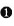
Kether—Crown to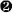
Chokmah—Wisdom.Colors: Bright Pale Yellow; Sky Blue; Blue Emerald Green; Emerald, flecked Gold.
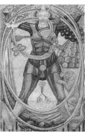
Know Naught!
All ways are lawful to innocence.
Pure folly is the Key to Initiation.
Silence breaks into Rapture.
Be neither man nor woman, but both in one. Be silent, Babe in the Egg of Blue, that thou mayest grow to bear the Lance and Graal!
Wander alone, and sing! In the King's palace his daughter awaits thee.20
I will struggle with the Fool. He does writhe about. I can't see him. Has he got any children with him & is not his bag a jester's balloon? That innocent gaiety asks for the brush of a saint & my lines come out like treacle. I wish I could paint in crystals.21
—Harris to Crowley date uncertain.
This may seem odd to you, but I am going to open my remarks about the first tarot trump, the Fool, by quoting what Crowley wrote about the last trump, the Universe:
In the card itself there is consequently a glyph of the completion of the Great Work in its highest sense, exactly as the Atu of the Fool symbolizes its beginning. The Fool is the negative issuing into manifestation; the Universe is that manifestation, its purpose accomplished, ready to return. The twenty cards that lie between these two exhibit the Great Work and its agents in various stages.22
In essence, there are not really twenty-two trumps, there is only one—the Fool. Al the other trumps live inside (and issue from) the Fool. Of all seventy-eight tarot cards, none is more revered and misunderstood. In The Book of Thoth Crowley devotes over twenty-four pages to this card alone and, in doing so, gives us a whirlwind tour of the greatest hits of Greek, Roman, Hindu, Hebrew, pagan, and Christian mythology.
The most familiar image of the Fool is that of a young vagabond, his head wreathed with laurel or ivy. He holds a white rose and wears a motley coat. Over his shoulder rests a staff, at the end of which is tied a bag or satchel. A dog or a crocodile sometimes nips at his feet. He strolls mindlessly toward the edge of a high mountain cliff, his eyes cast irresponsibly skyward. He still has one foot upon the earth, the other poised to take the fateful step into the abyss. Lady Harris's Fool is different. This Fool has both feet planted unfirmly in air!
Why is the Fool such a mysterious and awesome character? Isn't he just another mediaeval cast member jesting to the Emperor, Empress, and Hierophant? Perhaps. That picture certainly fits many of the traditional images of this card. From a mystical point of view, however, the Fool is much more (actually, much, much less). The Fool propounds the ultimate riddle. Creation and the meaning of life are an incomprehensible joke. The Fool is more than God. The Fool is the “nothing” we refer to when we say, “Nothing created God. Nothing is beyond God. Nothing is greater than God.”The Fool is perfectly empty-headed, for if there were anything inside, his innocence would be destroyed.
As the first trump it is only logical that the Fool be considered Key number 1. He is not, however, Key number 1. He is Key number 0. This is the Fool's first and greatest trick—creating the one (and consequently everything else) out of nothing.
“That's crazy!” your rational mind says; and your rational mind is correct—up to a point. It doesn't make sense that something can come out of nothing. If we wanted to personify the irrational concept of something coming from nothing, however, what better mascot could we choose than that of an idiot who makes no sense—a fool?
I have seen several early drafts that Crowley rejected. To my absolute delight, I discovered that two of them bore the unmistakable image of Harpo Marx. How perfect! In Marx Brothers' films, Harpo was the archetypal fool. Even his name betrayed his identity. Not only was he the girl-chasing clown who made fools of all the straightlaced and uptight characters, he did it all without saying a word. He was silent like the very mythological characters from whom the Fool is constructed; silent like Harpocrates, the Greek god of innocence; silent like Dionysus when he was asked by king Pentheus “What is Truth?”; silent like Christ standing before Pilate when he was asked the exact same question.
The Fool of the Thoth Tarot retains the familiar elements of traditional decks, but boldly asserts that the character we are dealing with is none other than the inscrutable supreme deity of every age and culture. He is the pagan Green Man of spring; Parsifal, the pure fool who wins the Holy Grail; Hoor-Pa-Kraat, the innocent Egyptian lord of silence, who treads upon the crocodile god Sebek, the Devourer. His wild eyes, horns, tiger, pine cones, grapes, and ivy show him to be the secret essence of the cosmos worshipped for centuries as Dionysus. Dionysus Zagreus, the horned son of Zeus, and Bacchus Diphues, the drunken and mad omni-sexual god of divine ecstasy.
Lady Harris's Fool is a cornucopia of sacred images, many of which reveal themselves only after long meditation (and the aid of a magnifying glass). He bursts into midair of existence from behind three swirling rings that issue from and return to his heart. These are the three veils of negativity (Ain, Ain Soph, and Ain Soph Aur)23 that Qabalists teach gave birth to the singularity of creation. His satchel is filled with the entire universe in the form of planetary and zodiacal coins.
The Fool is the Holy Spirit itself. The dove, symbol of the Holy Spirit; the butterfly, symbol of transformation; winged globe, symbol of Mercurial air; and the Egyptian vulture-goddess Mauf24 pour from the Holy Grail in the Fool's right hand. Like the Virgin Mary, Maut became impregnated by the spirit (breath) of the wind. “The whole picture,” Crowley tells us, “is a glyph of the creative light.”25
With that in mind, I would finally like to draw the reader's attention to the image of the Sun covering the groin area of the Fool, and the almost invisible image of the Moon directly above the head of the crocodile. Between these two primary symbols of male and female are what Crowley describes as “twin infants embracing on the middle spiral. Above them hangs the benediction of three flowers in one.”26
We can only speculate on the meanings of these symbols. In my opinion, it is highly likely that they allude, at least in part, to certain aspects of sexual alchemy that Crowley was not inclined to dwell upon in detail in published material. Certainly, the powers and unlimited potential of the generative processes might fall appropriately into the category of “the creative light.” Other speculations aside, here at the very beginning of our study of the other cards I ask that you not lose sight of the obvious fact that the Fool's genitals are hidden by the Sun.
ATU I THE MAGUS
The Magus of Power
Planetary Trump of Mercury
Original Design: A fair youth with winged helmet and heels, equipped as a Magician, displays his art. His attitude suggests the shape of the Swastika or thunderbolt, the message of God.27
Hebrew Letter: Beth (house).
Tree of Life: Path 12, joining Kether—Crown to
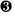
Binah—Understanding.Colors: Yellow; Purple; Grey; and Indigo, rayed Violet.
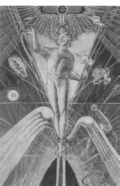
The True Self is the meaning of the True Will: know Thyself through Thy Way!
Calculate well the Formula of Thy Way!
Create freely; absorb joyously; divide intently; consolidate completely.
Work thou, Omnipotent, Omniscient, Omnipresent, in and for Eternity.28
I have had a wrapper for the catalogue made by the Sun Engraving Co. This will be beautifully printed with the Magician reproduced perfectly as a card, the right size & engraved on it.”29
—Harris to Crowley May 11,1941.
Before I discuss the symbolism of the Magus card, I have to set to rest the absurd rumor that Crowley intended there to be three Magus cards in the Thoth Tarot. By no stretch of imagination did Crowley intend to create twenty-four trumps or an eighty-card tarot deck. Any theory or suggestion to the contrary would have him spinning in his grave (if he had one) and displays a profound ignorance of Crowley and The Book of Thoth. Crowley approved only one Magus card for inclusion in the Thoth Tarot. It is the image reproduced in The Book of Thoth and is the only Magus in the deck currently included in decks published by U.S. Games Systems, Inc.
The mystery of the three magi of the Thoth Tarot, is no mystery at all. The seventy-eight cards of a standard tarot deck are printed on four sheets of twenty cards per sheet. This provides room for eighty card-size images per print run. Most publishers fill the extra spaces by printing two instructional or promotional cards. Rather than doing that, the Swiss publishers, A. G. Mueller, decided to treat Crowley/Harris aficionados to a little bonus by filling the extra spaces with two earlier versions of the Magus that Harris completed but Crowley rejected. The two extra magi are nothing more esoteric than a thoughtful bonus from a generous publisher. So please, no more talk of the Three Wise Men!
The Magus is not only the title of the Mercurial trump that, in older decks, bears the title Magician or Juggler; it is also a title of the second highest level of spiritual illumination a human soul can attain. Toward the end of his life, Crowley calculated he reached this initiatory degree on his fortieth birthday, October 12, 1915 E.V. Six years previously, on December 17, 1909, in the North Mrican Sahara near Biskra, Algeria, he recorded his ceremonially induced vision of the third Enochian Aethyr30 that is the source of much of the imagery found in the Magus card. He describes it as follows:
Mercury is pre-eminently the bearer of the Wand: Energy sent forth. This card therefore represents the Wisdom, the Will, the Word, the Logos by whom the worlds were created…. It represents the Will. In brief, he is the Son, the manifestation in act of the idea of the Father. He is the male correlative of the High Priestess.31
The Magus is also the first of the alchemical trumps, and represents the alchemical element and principal of Mercury. “Mercury,” Crowleys explains, “represents action in all forms and phases. His is the fluidic basis of all transmission of activity, and, on the dynamic theory of the Universe, he is himself the substance thereof.”32
The figure of the Magus actually forms the alchemical glyph of Mercury. The two snakes at his head are the horns and the huge stylized wings at his feet make the arrowhead. He is projected upon the caduceus of Mercury. Behind the left wing at his feet, barely visible, is a golden sunburst affirming Mercury's role as herald of the Sun. Behind the right wing is the Cynolcephalus, the Ape of Thoth. This creature, who seems to be groping its way up from the lower right-hand corner of the card, is the personification of an ironic curse that afflicts Thoth-Mercury and all who attain the grade of Magus. Because falsehood and misunderstanding are inherent in all speech and writing, it is the cosmic duty of the Ape of Thoth to constantly mock the work of the Magus and distort his words. As Crowley points out, “Manifestation implies illusion.”33
The traditional weapons of the Magus are the wand, cup, sword, and disk. “With the Wand,” Crowley observes, “createth He. With the Cup preserveth He. With the Dagger destroyth He. With the Coin redeemeth He.”34 These are the weapons the Magusjoy fully juggles in midair along with four additional symbols: the style, papyrus, torch, and winged egg. The wand is the phoenix wand that symbolizes resurrection through the natural generative process; the cup is of Grecian style with two handles; the sword appears to be a stiletto, the weapon of stealth, deceit, and vengeance; the disk displays the eightfold star of Mercury; the style and papyrus are tools and instruments of the scribe.
The winged egg is an especially important factor in the evolving symbolism of the Thoth Tarot. In this card, it aptly represents the preexistent zero, which, like the Magus himself, is the source of all positive manifestation, but it will soon reappear in Atu VI, the Lovers, and other trumps as the symbol known as the Orphic egg. As the trumps develop, this egg will undergo a most wonderful alchemical adventure, one that is that is told only in the Thoth Tarot.
Other elements of the card are at first difficult to see. If we look carefully, we see that the caduceus is much larger than it first appears. Its rod reaches below the feet of the Magus to the very bottom of the card, where, by virtue of its upward thrust, it appears to have stretched and finally penetrated the membrane of space.35 The wings of the caduceus span the entire width of the top of the card and reach down behind the neck of the Magus. What appears to be a downward-pointing arrow in the disk of the caduceus is actually the symbol of the descending dove.
ATU II THE HIGH PRIESTESS
The Priestess of the Silver Star
Planetary Trump of the Moon
Original Design: A crowned priestess sits before the veil of Isis between the pillars of Seth. She is reading intently in an open book.36
Hebrew Letter: Gimel (camel).
Tree of Life: Path 13, joining Kether—Crown to
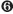
Tiphareth—Beauty.Colors: Blue; Silver; Cold Pale Blue; and Silver, rayed Sky Blue.
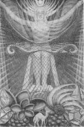
Purity is to live only to the Highest; and the Highest is All be thou as Artemis to Pan!
Read thou in The Book of the Law, and break through the veil of the Virgin!37
The Moon, partaking as she does of the highest and the lowest and filling all the space between, is the most universal of the Planets.38
It may seem curious that the Priestess represents the Moon, but Atu XVIII, the Moon, represents the zodiac sign of Pisces. We will see what Crowley has to say about that when we discuss the Moon. Here, let's be satisfied to know that the Priestess represents the Moon in her higher aspect—the aspect that joins the human to the divine. The Moon in Atu XVIII is—well—something else.
As the only middle-pillar path that spans the Abyss, the position of the High Priestess on the Tree of Life is unique. She links the ultimate Father of Kether to the Son of Tiphareth and, in doing so, joins the supernal triad to the rest of the Tree. “In this card,” Crowley points out, “is the one link between the archetypal and formative worlds.”39 The Abyss she traverses is, quite literally, the desert of the soul, and like the desert camel, she is the only vehicle capable of crossing that terrible wasteland.
The principal deities connected with this card are those who, by tradition, represent the lunar goddess, virgin priestess, huntress, and, most importantly, the powers and mysteries of woman as the initiatrix. If you look carefully, you will see that her bow is actually a three-stringed harp “for she is a huntress, and hunts by enchantment.”40
This card is a textbook display of the graphic principles of synthetic projective geometry.41 The arms of the Priestess sweep upward, pulling and distorting the webbed network of space and light, forming the crescent bowl of a magnificent Moon-colored cup.42 The pillars on either side of her are obscured by the diagonal webbing and somewhat difficult to see, but it is important to be conscious of their presence when meditating on the composition of the card. Harris has brilliantly executed Crowley's description as
the most spiritual form of Isis the Eternal Virgin; the Artemis of the Greeks. She is clothed only in the luminous veil of light. It is important for high initiation to regard Light not as the perfect manifestation of the Eternal Spirit, but rather as the veil which hides that Spirit. It does so all the more effectively because of its incomparably dazzling brilliance. Thus she is light and the body of light. She is the truth behind the Veil of Light. She is the soul of light.43
The High Priestess is the initiatrix. Initiation means “beginning.”The objects that appear at the bottom of the card are not lunar symbols per se. The camel is, of course, indicative of the Hebrew letter Gimel (the Hebrew letter attributed to the High Priestess), but the other objects, the crystals and seeds, are suggestive of the hidden and mysterious secrets of the beginning of ife.
ATU III THE EMPRESS
The Daughter of the Mighty Ones
Planetary Trump of Venus
Original Design: Crowned with stars, a winged goddess stands upon the moon. She bears a scepter and a shield, whereon is figured a dove as symbol of the male and female forces.44
Hebrew Letter: Daleth (door).
Tree of Life: Path 14, joining Chokmah—Wisdom to Binah—Understanding.
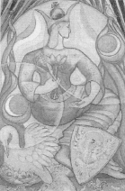
Colors: Emerald Green; Sky Blue; Early Spring Green; Bright Rose or cerise, rayed pale green.
This is the Harmony of the Universe, that Love unites the Will to create with the Understanding if that Creation: understand thou thine own Will!
Love and let love. Rejoice in every shape if love, and get thy rapture and thy nourishment thereof.45
It is impossible to summarize the meanings of the symbol of the Woman, for this very reason, that she continually recurs in infinitely varied form. “Many-throned, many-minded, many-wiled, daughter of Zeus.”46
Thank you very much Mr. Crowley!
At least we can say this—Daleth means door, and woman is the door of heaven when we are conceived, and the door of life and when we are born. The Empress is the trump of Venus and, in mythology, Venus, or Aphrodite, certainly had (or seemed to cause) her share of trouble. Most of the time, however, she was less the guilefiul instigator of mischie and more the tragic victim of circumstances. In either case, almost everybody was in love with her, and she certainly added a bit of spice to the Olympian soap opera.
Speaking of spice, the Empress is the second of the alchemical trumps and represents the element and principal of salt. Like Venus reclining on her love-couch awaiting the arrival of her next lover, Crowley describes her as “the inactive principle of Nature; Salt is matter which must be energized by Sulfur to maintain the whirling equilibrium of the Universe.”47
Sulfur, as we will see in the next trump, is represented by the Emperor—who represents the zodiacal sign of Aries—which is ruled by Mars—who was the lover of Venus. (It gets scary when this stuff starts to make sense, doesn't it?)
This card is more than just the full-color foldout of the Scarlet O'Hara of the gods, however. The path of Daleth is one of only three paths on the Tree of Life that lies entirely above the Abyss. It connects the second sephira, Chokmah (the Supernal Father) to the third sephira, Binah (the Supernal Mother). This is the hallway down which the queen of our Qabalistic fairytale tiptoes to get to the bedroom of the king. This is the path of the exchange of unimaginable love.
Harris's Empress is perhaps the most tasteful. and soothing card in the pack. The cool colors immediately lower my blood pressure. At first glance, she appears to be the goddess of vegetation, which is exactly what she is. Her presence cuts a doorway through towering plants and grasses. The supports of her throne are formed from twisted blades of grass, and upon their tops are perched the sparrow and dove, birds sacred to Venus. Her green skirt is topped with a blouse of passionate red, ornamented with bees and what appear to be dominos surrounded by spiral rings. Around her waist is the golden belt of the zodiac.
Her arms suggest the glyph of salt. She bears the lotus scepter in her left hand, and her right hand and arm curve delicately as if she were holding an invisible baby to her breast. This is the magical gesture called Mater Triumphans (Isis suckling the infant Horus). Perhaps this is just a rehearsal for what is to come. The Empress, if you haven't noticed, is pregnant (her baby floating blissfuly in a salty sea of amniotic fluid).
In keeping with the motherhood theme, we find, at the lower left of the card, a white pelican feeding its young from the blood of her own breast. On the lower right is a shield displaying a white double-headed eagle holding the Moon in its beaks. This represents the alchemical white tincture whose nature is of the Moon and silver. There is also a red tincture, and we'll discover it in the next trump, the Emperor.
All of these symbols sit upon a carpet adorned with fleurs-de-lis and tiny fish that Crowley suggests “seem to be adoring the Secret Rose which is indicated at the base of the throne.'48 The secret rose of the Empress is certainly worthy of adoration. Her credentials are impeccable:
I am Nature and God: I reign, I am, alone.
None other may abide apart: they perish,
Drawn into me, into my being grown.
None other bosom is, to bear, to nourish,
To be: the heart of all beneath my zone
Of blue and gold is scarlet-bright to cherish
My own's life being, that is, and is not other;
For I am God and Nature and thy Mother.49
ATU IV THE EMPEROR
Sun of the Morning, chief among the Mighty
Mars Rules—Sol Exalted
Original Design: A flame-clad god bearing equivalent symbols. His attitude suggests the symbol of alchemical sulfur, and he is seated upon the cubical stone, whose sides show the green lion and white eagle.50
Hebrew Letter: Tzaddi (fish hook).
Tree of Life: Path 28, joining
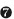
Netzach—Victory to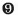
Yesod—Foundation.Colors: Scarlet; Red; Brilliant Flame; Glowing Red.
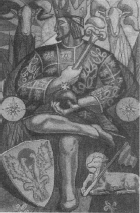
Use all thine energy to rule thy thought: burn up thy thought as the Phoenix.51
I have only just got your letters returned today after travelling from 11 A.M. to 7.30 P.M. Sitting in stations & huddling with savage soldiers & children in stuffy railway carriages.52
—Harris to Crowley, May21,1941.
In chapter 13, I mentioned a paragraph in The Book of Thoth where Crowley throws us a real curve regarding the whole “Tzaddi is not the Star” matter. It is one of several instances in the book where he seems to contradict himself on this subject. Before I go on about the Emperor, I Will try to overcome my complete exasperation and calmly address this most frustrating issue. The trouble, it seems, stems from the direction the light comes from in this card. Let's start by reviewing what Crowley tells us in no uncertain terms (and in multiple places) is the situation:
- Atu IV is the Emperor.
- The zodiac sign assigned to the Emperor is Aries.
- The Hebrew letter for the Emperor is
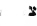
Tzaddi (and everything Tzaddi represents). - On the Tree of Life, the Emperor is found on path 28, which joins the seventh sephira, Netzach, to the ninth sephira, Yesod.
Fine! I'm happy with that. It agrees with Crowley's detailed explanations for the Tzaddi/Hé switch. It agrees with his charts and diagrams of the Tree of Life. What it doesn't agree with is the last paragraph of his comments on the Emperor on page 78 of The Book of Thoth, where he tells us:
It is finally to be observed that the white light which descends upon him indicates the position of this card in the Tree of Life. His authority is derived from Chokmah, the creative Wisdom, the Word, and is exerted upon Tiphareth, the organized man.53
The “white light” in the card issues from the upper right corner and shines diagonally toward the center of the card. In other words, Crowley is talking as if the Emperor is positioned on the Tree of Life on the path that runs from the second sephira, Chokmah, to the sixth sephira, Tiphareth—the path that he tells us in nearly every other reference should be occupied by the Star. Arghhhh!
Personally, I think that, in this case, Harris, was operating from the traditional understanding of the trumps and their placement on the tree, and Crowley's words carelessly neglected to make that point. Still, I am sure that students of tarot and Crowley will debate this subject forever. As for me, the only thing I know for sure is that the author of The Book of the Law himself tells us, “All these old letters of my Book are aright but is not the Star.”54 Now, let's move on—please!
Atu IV, the Emperor, represents the sign of Aries, where Mars rules and Sol is exalted. “The sign,” Crowley points out, “is thus a combination of energy in its most material form with the idea of authority.”55 Referring to this card, Crowley even goes so far as to actually give us a somewhat cynical lesson in civics:
He is seated upon the throne whose capitals are the heads of the Himalayan wild ram, since Aries means a Ram. At his feet, couchant, is the Lamb and Flag, to confirm this attribution on the lower plane; for the ram, by nature, is a wild and courageous animal, lonely in lonely places, whereas when tamed and made to lie down in green pastures, nothing is left but the docile, cowardly, gregarious and succulent beast. This is the theory of government.56
The Emperor is the third of the alchemical trumps and represents sulfur. His arms form the triangle and his legs form the cross of the glyph of sulfur, which Crowley tells us is “the male fiery energy of the Universe, the Rajas of Hindu philosophy. This is the swift creative energy, the initiative of all Being.”57
Upon his shield is the red eagle that identifies him with what the alchemists call the red tincture. The red tincture is symbolic of the fiery action and nature of the Sun and gold, just as the white eagle on the Empress's shield identifies her with the white tincture, symbolic of the action and nature of the Moon and silver. The great alchemical recipe dictates that we must first find the white tincture, then the red tincture, then unite them to accomplish the great work. This, of course, suggests that the Empress and the Emperor enjoy a much more intimate relationship than what we expect of governmental officials. We will see them get very cozy in Atu XIV, Art.
ATU V THE HIEROPHANT
The Magus of the Eternal
Zodiacal Trump of Taurus
Venus Rules—Luna Exalted
Original Design: Between the pillars sits an ancient. He is crowned, sceptered, and blessing all in a threefold manner. Four living creatures adore him, the whole suggesting a pentagram by its shape.58
Hebrew Letter: Vau (nail).
Tree of Life: Path 16, joining Chokmah—Wisdom to
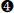
Chesed—Mercy.Colors: Red; Orange; Deep Indigo; Deep warm Olive;
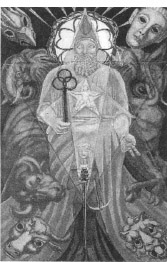
Offer thyself Virgin to the Knowledge and Conversation of thine Holy Guardian Angel! All else is a snare.
Be thou athlete with the eight limbs of Yoga; for without these thou are not disciplined for any fight.59
I should like hours of brain-picking with you. I have 1000 of things I want to ask you, I shall never remember when I see you! Qaballa, Chinese, Eddington medley & questions & demands for your sage & onion explanations pierce the ether all round me.60
—Harris to Crowley, January 28, 1940.
This card is so rich in traditional and Thelemic symbolism that it is difficult to know where to begin. One thing is immediately obvious—this is not your Aeon-of-Osiris Pope. The whole card is presented as the shrine of the Hierophant of the Aeon of Horus, and this guy has some sex appeal.
Instead of the pale, humorless features of a delicate prelate officiating at some demure worship service, we are thrilled by the bold, confident image of a Babylonian priest-king—an initiator in every sense of the word. He's not humbly served by docile acolytes like the Osirian Hierophant; instead he is actively supported in his work by his sword-bearing Scarlet Woman, the embodiment of heavenly Venus who rules Taurus. “Let the woman be girt with a sword before me,” The Book of the Law commands.61 “This woman,” Crowley states, “represents Venus as she now is in this new aeon; no longer the mere vehicle of her male counterpart, but armed and militant.”62
She carries the Moon, which is exalted in the sign of Taurus. Moreover, we see evidence of this new initiatory love relationship dramatically highlighted in the ornate window that illuminates the shrine, which Crowley describes thus:
This symbolism is further carried out in the oriel where, behind the phallic headdress, the rose of five petals is in blossom. The symbolism of the snake and dove refers to this verse of The Book of the Law—chap. I, verse 57; “there are love and love. There is the dove, and there is the serpent.63
The window is held in place by nine nails, the number nine being symbolic of the ninth sephira, Yesod, the sphere of the Moon. The Hierophant's shrine is guarded (as every good shrine should be) by the four Kerubic beasts. And here I think we should address what appears at first glance to be a mistake Lady Harris has made as to the positioning of the four Kerubic beasts.
The four Kerubic beasts represent the four fixed signs of the zodiac: Leo (the fixed sign of fire, symbolized by the Lion), Scorpio (the fixed sign of water, symbolized by the eagle), Aquarius (the fixed sign of air, symbolized by a man or angel), and Taurus (the fixed sign of earth, symbolized by the bull). Tarot decks, reaching back to the earliest packs, have traditionally displayed the Kerubic beasts in the corners of various trumps (most often the Wheel of Fortune and the World). The placement of the four beasts on these old decks is almost universally consistent—the lion of Leo is in the lower right corner; the eagle of Scorpio is in the upper right; the man or angel of Aquarius is in the upper left; and the bull of Taurus is in the lower left. This is the natural order of the fixed signs as they appear on the zodiacal belt, and the logical place to put them.
In the Thoth Tarot, however, Harris appears to break with this tradition in her placement of the Kerubic beasts in the Hierophant and the Universe trumps. The bull and the lion dutifully occupy the traditional corners, but the angel and the eagle have switched positions. Could it be that she was ignorant of the order of the signs of the zodiac and that Crowley let her get away with it in two important cards? Could it be that, in the Aeon of Horus, the signs of the zodiac have been rearranged? The answer to both of these questions is “no.” In the New Aeon, it's not the position of the zodiac signs, but the symbols of the Kerubs, that have changed.
In Crowley's vision of the twenty-third Enochian Æthyr, it is revealed that the emblem for fixed-air Aquarius is now the eagle, and the emblem for fixed-water Scorpio is now the angel:
The Beast and the Scarlet Woman are attributed to Leo and Scorpio. They are the two-in-one Chief Officers of the Temple of the New/Eon of Heru-Ra-Ha. (Note the Eagle Kerub in the 23 Aire is Aquarius. Scorpio is the Woman-Serpent. This is important, for the old attribution is of the Eagle to Scorpio64
The Hierophant's throne is flanked by elephants. He is seated upon the bull of Taurus itself. He holds in his right hand a wand surmounted by three rings symbolizing the ascendancy of the Aeon of Horus from the preceding Aeons of Isis and Osiris. His left hand is open in benediction.
All this New Aeon imagery is wonderful, but what we should keep foremost in our minds is the fact that the Hierophant, is the
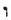
Vau of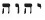
YHVH. He is the six of the divine macrocosmic consciousness to whom we must “nail” the five of our earthly microcosmic consciousness. He is the Prince Charming in the cosmic fairytale—our Holy Guardian Angel. The initiatory level characterized by the knowledge and conversation with the H.G.A is illustrated on this card by the union of the pentagram and hexagram. Our microcosmic self is the dancing child in the pentagram upon the Hierophant's macrocosmic breast. The hexagram can be seen enclosing the whole body of the Hierophant.ATU VI THE LOVERS
The Children of the Voice
The Oracle of the Mighty Gods
Zodiacal Trump of Gemini
Mercury Rules—Dragon's Head Exalted
Original Design: A prophet, young, and in the sign of Osiris Risen. He is inspired by Apollo to prophesy concerning things sacred and profane: represented by a boy with his bow and two women, a priestess and an harlot.65
Hebrew Letter: Zain (sword).
Tree of Life: Path 17, joining Binah—Understanding to Tiphareth—Beauty.
Colors: Orange; Pale Mauve; New Yellow leather; Reddish Grey, inclined to mauve.
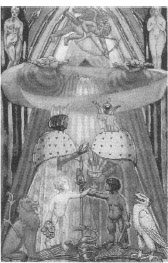
The Oracle of the Gods is the Child-Voice of Love in thine own Soul! hear thou it!
Heed not the Siren-Voice of Sense, or the Phantom-Voice of Reason: rest in Simplicity, and listen to the Silence.66
Dear Aleister, I have been struggling with a bad cold &the Lovers—the latter begins to cheer up. I haven't decided whether I'll come back & brood on the Fool or stay here.67
—Harris to Crowley, date uncertain.
Atu VI, the Lovers, is the fourth of the alchemical trumps. A familiar alchemical maxim reads solve et coagula, “solution and coagulation.” The process of solve is represented in tarot by the Lovers; the process of coagula in the Art card. This makes sense astrologically because, in the zodiac, Gemini (the Lovers) is opposite Sagittarius (Art). Between these two trumps are other trumps that represent developmental phases between solve et coagula.
Solve et coagula is a story of a marriage and pregnancy. The main character in this alchemical love story is not the bride nor the groom, but the child of their union. In the Thoth Tarot, the child is symbolized as the Orphic egg that, as Crowley reminds us, “represents the essence of al life that comes under the formula of male and female.”68
Like the events surrounding the birth of any child, our alchemical scenario develops in stages. Atu VI, the Lovers, is the wedding ceremony; Atu XIV, Art, is the honeymoon; in Atu IX, the Hermit fertilizes the egg; and Atu XIII, Death, keeps it nice and warm in the last stage before hatching.
This card is a scene from one of the most famous alchemical texts of all time, The Chymical Marriage if Christian Rosenkreutz, which Crowley describes as “a masterpiece too lengthy and diffuse to quote in this place. But the essence of the analysis is the continuous see-saw of contradictory ideas. It is a glyph of duality.”69 Let's look how Lady Harris uses this card to set the scene for the first phase of this great romance.
Starting at the bottom of the card, we find the Orphic egg. It has wings as if it just few in from the Magus card. In this beginning phase of the operation, it is just the latent seed of life. It sits between a white eagle and a red lion symbolic of the female and male components of our formula—the white and red tinctures of the Empress and the Emperor. Later, in the Art card, we will see the advanced stage of the operation—the red lion will turn white and the white eagle will turn red.
The children attending the bride and groom are none other than Cain and Abel. Their presence, together with Lilith and Eve in the upper corners, springs from Crowley's vision of the Second Aethyr of The Vision and The Voice. The bride is white and wears a silver crown. She holds a golden cup that bears the image of the descending dove of the Holy Spirit. Her robe is ornamented with bees like the ones we saw on the blouse of the Empress and the Emperor. The groom is black and wears a golden crown. He holds the sacred lance, the complementary weapon to the bride's cup. His robe is ornamented with snakes like those found on the blouse of the Emperor.
The officiating priest is none other than the Hermit of Atu IX. He makes the magical sign of the Enterer by thrusting his hands forward over the couple. Around his arms a scroll of the word (the cosmic marriage certificate) is twisted to form the eternal mobius strip.
Above al their heads, the blindfolded figure of Cupid or Eros aims his arrow threateningly in a direction that appears to threaten no one. This is the downward arrow70 spoken of by the angel of the fifth Aethyr of The Vision and The Voice. The downward arrow is said to be shot by “the topmost point”71 of the Yod of YHVH. As we learned in chapter 9, the Yod has its topmost point in Kether, but it resides mostly in Chokmah. As we see in the Lovers, Cupid is pointing his arrow directly from Kether to Chokmah.
The entire ceremony takes place beneath an arch of steel swords (Zain, the Hebrew letter attributed to the Lovers, means “Sword.”). We will see how al this symbolism reverses and blends when we discuss Atu XIV, Art. But first, we have other trumps to discuss, including those that represent the alchemical phases between solve et coagula.
ATU VII THE CHARIOT
The Child of the Powers of the Waters
The Lord of the Triumph of Light
Zodiacal Trump of Cancer
Luna Rules—Jupiter Exalted
Original Design: A young and holy king under the starry canopy. He drives furiously a chariot drawn by two sphinxes. As Levi drew it.72
Hebrew Letter: Cheth (fence).
Tree of Life: Path 18, joining Binah—Understanding to Geburah—Severity.
Colors: Amber; Maroon; Rich bright Russet; Dark greenish Brown.
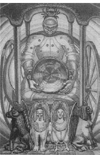
The Issue of the Vulture, Two-in-One, conveyed; this is the Chariot of Power.
TRINC: the last oracle!73
The alteration of Abracadabra (Charioteer) & the Taurus Disk card are complete. Please forgive this brief statement, it is because I know your are so lucid and logical that I can write & tell you I have taken such arbitrary action without consulting you as you will realize this was a moment to say “Snap!”74
—Harris to Crowley, May 11,1941.
I hope the reader will forgive me for not spending a great deal of time discussing the superficial features of this card. They are much like those found in traditional versions of this trump. The Chariot is drawn by sphinxes representing the elemental blending of the Kerubic beasts. The starry canopy of the chariot represents the night sky. The charioteer is in full armor, much like the crab of the zodiac sign of Cancer, which this card represents. He bears the Holy Grail, in this case a magnificent carved amethyst (sacred to Jupiter, which is exalted in Cancer). The whole is a rendering of Crowley's vision of the 12th Aethyr in The Vision and The Voice.75
What I would like to focus upon is a secret of sexual alchemy that Crowley seemed anxious to convey in his comments on the Chariot in The Book of Thoth. Let's start by reviewing the above quote from Crowley's “General Characters of the Trumps as They Appear in Use”:
The Issue of the Vulture, Two-in-One, conveyed; this is the Chariot of Power.
TRINC: the last oracle!76
This is perhaps the most obscure of all the verses of that work. It talks about “Two-in-One, conveyed”; The Chariot, of course, conveys the charioteer, who conveys the Holy Grail. Therefore, the Holy Grail must represent (or contain) the Two-in-One. But what is the Holy Grail and what is the Two-in-One?
Grail mythology tells us that the Holy Grail is the cup from which Christ drank at the Last Supper, and the same one that Joseph of Aramathea used to catch the blood and water that spilled from the liplike spear wound in the side of the crucified Christ. Joseph later conveyed the Grail and the spear to a magically constructed castle, where their mysterious powers complicated the lives of many generations of noble knights. In one very real way, the Chariot is the Chapel of the Holy Grail on wheels.
Am I trying to tell you that the precious bodily fluids of Christ are really ingredients of the Two-in-One cocktail of the Holy Grail? In a way, yes. But let's look at it another way—let's look at it as “The Issue of the Vulture.”
In Egyptian mythology, the vulture was sacred to Maat, the goddess of justice and supreme balance. The vulture was said to conceive without mating. Its child immaculately conceived in a mysterious internal process that, for other creatures, requires contributions of from both male and female. The Issue of the Vulture is therefore the product (or child) of an internal marriage of two perfectly balanced things, or Two-in-One.
That's all fine and good, but in real life, vultures mate like every other bird, and even if they didn't, how would we humans go about emulating that magical process. For us, neither the male nor the female is a complete human unit capable of reproduction. What is absent in the male is present in the female, and vice versa. Our creation of the Two-in-One that results in the issue of a human baby is the most natural and (and usually the most pleasant) of all cooperative endeavors. How are the principles that effect the very human sexual act reflected on a cosmic scale, however? What would we do with the real Two-in-One even if we knew how to create it?
The answer is “TRINC,” an oracular word that comes from the story of Gargantua and Pantagruel, a mystical satire by François Rabelais (1494-1553). In the story, one of the main characters, Panurge, seeks the answer to the question, “Should I marry?” He and his companions eventually decide to seek the Oracle of the Bottle for the answer. Mter many adventures, they finally reach the Temple of the Bottle.” They pass through the door upon which is written En Oino Aletheia (In wine lies truth), where Bacbuc, the Priestess of the temple, takes them into the presence of the Holy Bottle. Panurge poses his question, and the Holy Bottle answers by making a sharp sound like that of cracking glass: “Trine!” (Drink!). Panurge interprets this as an affirmative answer and an admonition to drink deep from the well spring of life and knowledge.
As you have probably guessed, Panurge's question “Should I marry?” has deeper magical implications than simply questioning the wisdom or folly of matrimony. It should be of particular interest to us because we see so much “marrying” going on in the trumps of the Thoth Tarot. Recall that our Qabalistic fairytale in chapter 10 is all about marriage; the marriage of the Prince and Princess (the Holy Guardian Angel and his client), and the marriage of the supernal King and Queen. Two things becoming one seems to be a formula of supreme spiritual importance in the tarot. But Trine (drink) is a curious answer to the question, “Should I marry?” Drink what?
The Hebrew letter associated with the Chariot is Cheth, which, when spelled in full, enumerates to 418, the same number as ABRAHADABRA, the magical word that expresses the formula of the marriage of the microcosm with the macrocosm (or the aspirant to his or her Holy Guardian Angel). This word (with a slight Lady Harris typo) can be seen embroidered in the canopy of the Chariot. ABRAHADABRA is also indicative of the uniting of male and female that we see expressed in other trumps as alchemical images such as the red/white lion and white/red eagle.
The Chariot represents the zodiac sign of Cancer, whose symbol is a not-too-subtle glyph for a particular technique of tantric yoga in which male and female energies and essences are perfectly prepared, balanced, and exchanged to create the Two-in-One elixir of Life. The elixir is then conveyed in a particular manner to serve as a eucharistic talisman of unlimited creative potential.
In the language of Thelemic imagery, the elixir is brewed in the Holy Grail by Babalon/Nuit in Binah (the Queen of our Qabalistic fairytale), who then offers it to the Beast/Hadit in Chokmah (the King of our Qabalistic fairytale) and they both drink (TRINC) and become ecstatically drunken. In doing so, they annihilate all sense of separateness, and so on. (See chapter 10 if you need to review the whole story.)
The path of the Chariot crosses the Abyss and joins the fifth sephira, Geburah, to the third sephira, Binah. Being so high on the Tree of Life, its mysteries deal with the most sublime and profound aspects of nature and consciousness. Please keep this in mind when you are tempted to view this card (and my comments) as simply an expression of sexual alchemy. As effective as this operation can be, it is only a refection of the magick of the gods, a faint echo of the titanic forces, energy, and love that creates, sustains, and destroys the universe.
ATU VIII ADJUSTMENT
The Daughter of the Lords of Truth
The Ruler of the Balance
Zodiacal Trump of Libra
Venus Rules—Saturn Exalted
Original Design: A conventional figure of Justice with scales and balances.77
Hebrew Letter: Lamed (ox goad).
Tree of Life: Path 22, joining Geburah—Severity to Tiphareth—Beauty.
Colors: Emerald Green; Blue; Deep Blue-Green; Pale Green.
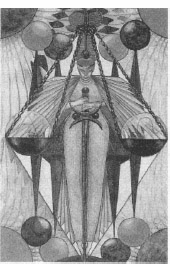
Balance against each thought its exact Opposite! For the Marriage if these is the Annihilation if Illusion.78
The Woman Satisfied. From the cloak of the vivid wantonness of her dancing wings issue her hands; they hold the hilt of the Phallic sword of the magician. She holds the blade between her thighs.79
—Harris to Crowley, between November 3 and December 19, 1939.
I will do a new Justice, damn her. Do you think there was ever “a woman satisfied”? With what a smirk she would greet the dawn.80
—Harris to Crowley, December 19, 1939.
My experience of satisfied women is that they do greet the dawn with a smirk; if not the dawn, any time up to five o'clock in the afternoon, and only when it wears off does one have to start all over again….
These notes on Justice, or as we have preferred to call her “Adjustment.”…I suppose I was in a very bad temper when I made my criticism, but I do feel strongly that the plumes of Maat are too insignificant, and the Dove and Raven look simply stuck on; nor do I think that the tessellated pavement is quite right. The general criticism is that the card is a little too cold; Libra is the sign of autumn, season of mists and mellow fruit fulness, close-bosomed friend of the maturing sun. In your card you have got the idea of balance static, whereas it ought to be dynamic. Nature is not the grocer weighing out a pound of sugar; it is the compensation of complicated rhythms. I should like you to feel that every adjustment was a grande passion; compensation should be a festival, not a clerk smugly pleased that his accounts are correct. It seems to me that this doctrine is very important as a commentary on the text “Existence is pure joy”, and I feel sure that the connection of Venus and Saturn with the sign is significant in this respect. The compensation is surely the awakening of the Eld of the Al-Father, the constant reproduction of the original purity from the last stage of illusion. (Compare what I said above about the number Ten)…
To return to “Adjustment”; those birds bother me very much. I don't think they belong. I think they come from Noah's Ark. It would be better to simplify this card by leaving them out altogether. I feel sure that when you get the Venus and Saturn dancing motive firmly in your mind, you will produce a lady whom you will like better.81
—Crowley to Harris, December 19,1939
The Adjustment is being queer with me. She has, after al, insisted on being Beardsley!82 Also Harlequin comes in & out of it so I must have to submit. But why Harlequin? Is there any connection? Also she won't sit down but stands on her toes just balanced. The design-result is good. That blue is cobalt I take it. The instruction says Blue-Blue Green. Pale green Emerald. That Emerald is a vile pigment in poster paints.83
—Harris to Crowley, July 12, 1940.
Judging from what is written in the above excerpts from the Crowley-Harris correspondence, it is clear that the early drafts of Adjustment bore little resemblance to the finished product. Crowley obviously had a clear idea what was needed, and the fact that he wrote so passionately on the matter underscores the importance he ascribed to this trump. His words are aimed, however, not only at Frieda Harris, the artist, but at Soror Tzaba, the magical student. He not only wanted the Adjustment card to turn out the way he wanted, he wanted Harris to appreciate its spiritual importance and achieve an epiphany of understanding. It appears to me that they both were successful.
The goddess of Adjustment is in perfect balance, left to right and top to bottom. Amid spheres of light and darkness, she stands on tiptoe at the very point of her sword. An enormous set of balances suspends from the perfect point of her crown (the ostrich plumes of Maat, the Egyptian goddess of justice). The left scale pan holds the alpha, and the right the omega. The lines from her toes to the scale pans to the tip of her crown create a lozenge, a type of vesica84 (by which students of mystic geometry measure the immeasurable), which stretches the fabric of space to reveal the goddess. Crowley calls Adjustment “the feminine complement of the Fool.”85
The combined Hebrew letters these cards represent, Aleph and Lamed, spell AL and enumerate to 31. AL is the root of the Hebrew word for “God”; LA is the Hebrew word for “not.” In the Western Zen of Thelema, “God-Not-God” is a very important concept.
ATU IX THE HERMIT
The Prophet of the Eternal
The Magus of the Voice of Power
Zodiacal Trump of Virgo
Mercury Rules—Mercury Exalted
Original Design: Wrapped in a cloak and cowl, an ancient walketh, bearing a lamp and staff. Before him goeth upright the Royal Urreus Serpent.86
Hebrew Letter: Yod (hand).
Tree of Life: Path 20, joining Chesed—Mercy to Tiphareth—Beauty.
Colors: Green (yellowish); Slate Grey; Green Grey; Plum color.
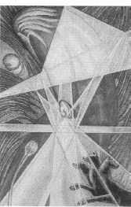
Wander alone; bearing the Light and thy Staff ! And be the Light so bright that no man seeth thee!
Be not moved by aught without or within: keep Silence in all ways!87
Why don't you like my egg question? Is it because you don't know the answer?88
—Harris to Crowley, November 30, 1939.
By now, you are probably tired of hearing me talk about the special virtues inherent in the element earth. You probably think you've heard enough about how humble earth is uniquely connected to spirit, and how it helps regenerate the highest high because of the simple fact that it is the lowest low (see chapter 11).
Well, get ready to hear some more, because we are not through yet. As a matter of fact, in the pages that follow, you are going to get some pretty big doses of this doctrinal medicine that Crowley calls the “climax of the Descent into Matter.”89 Why is it so important for you to keep taking this medicine? First of all, because it will help you understand the living nature of tarot. More important, however, because you are the grand climax of the descent into matter.
I have tried to organize the material of this book so that by the time you read about the last card of the tarot, the Ten of Disks, you will be armed with enough occult knowledge to comprehend the great magick that takes place there. It is a process that Crowley calls, “the mode of fulfillment of the Great Work.”90
I'm sure you wouldn't do this, but if you were to turn to the back of the book and read what I have written about the Ten of Disks, you would learn (albeit prematurely) that the three key cosmic players that are responsible for creating that “mode of fulfillment of the Great Work” are Earth, Mercury, and the Sun. That shouldn't surprise you really. After all, Earth is that special lowest-of-the-low element you're getting so tired of hearing about; tarot is the province of Thoth/Mercury; and the Sun is the secret seed of universal life that we knew was going be so important since we first saw it radiating from in front of the Fool's groin. Earth, Mercury, and the Sun have their first important strategy meeting in Atu IX, the Hermit.
Just look at how Earth, Mercury, and the Sun come together in the Hermit. He represents the zodiac sign of Virgo. Virgo is the mutable sign of Earth. Virgo is ruled by Mercury, and Mercury is exalted in Virgo. The Hermit carries the lamp of the Sun, with which he gives his light to the world. It's a simple as that.
We've met the Hermit once before as the hooded figure that officiates at the royal wedding in Atu VI, the Lovers, and, while he is sexually ambivalent, he is indeed a “he” and an important expression of male creative energy. The Hebrew letter sacred to Virgo and the Hermit is
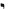
Yod, the tenth letter, and the first and supreme letter in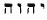
YHVH. In a very real way, the tiny fame of Yod is the fundamental Hebrew letter. All the other letters are created from this basic form. As the hidden seed of the Hebrew alphabet, Yod also symbolizes the mystery of sperm, the hidden seed, and a central secret of fertilization. (See how the Hermit stares at the Orphic egg? If I were that egg, I'd be nervous!) Crowley writes, “In this Trump is shewn the entire mystery of Life in its most secret workings.”91While, in my opinion, this remains true, we have to remember that Crowley died before the discovery of DNA, and so his understanding of biology was naturally incomplete and based upon obsolete doctrines and theories. There is, however, an abundance of images in this card to handily accommodate more recent scientific discoveries, and it doesn't take a rocket scientist to tell us this card is loaded. Let's see how Harris graphically handles all of this.
First of all, the figure of the Hermit himself is one big stylized Yod. He sports the ibis head of Thoth/Mercury. The only other visible part is his hand. (Yod in Hebrew) He stands in the fertile field of wheat. The heavy-headed shafts suggestive of sperm. He carries the lamp of the Sun. He is dogged by Cerberus, the three-headed guardian of the gates of the underworld, whom Hermes/Mercury tamed with honey cakes during his mission to rescue Persephone from Hades.
Perhaps the most intriguing image on the card is what appears to be a wriggling sperm cell in the lower left corner. Actually, it is the Homunculus image, first drawn in 1694 by Nicholas Hartsoecker, a noted advocate of the long-discredited theory of reproduction called the principal of spermist preformation.92 If you look closely at the head of the Homunculus, you will see a large-headed baby curled in the fetal position. While this concept is based upon biologically inaccurate science, it expresses the more universal and magically correct doctrine of correspondence: As above, so below.
You may find it rewarding to study the Hermit trump in conjunction with Atu XV, the Devil.
ATU X FORTUNE
The Lord of the Forces of Life
Planetary Trump of Jupiter
Original Design: A wheel of six shafts, whereon revolve the Triad of Hermanubis, Sphinx, and Typhon (
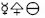
alchemical mercury, sulfur, and salt, or the three gunas sattva, rajas, and tamas).93Hebrew Letter: Kaph (palm of hand).
Tree of Life: Path 21, joining Chesed—Mercy to Netzach—Victory.
Colors: Violet; Blue; Rich Purple; Bright Blue, rayed yellow.
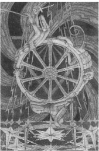
Follow thy Fortune, careless where it lead thee! The axle moveth not: attain thou that!94
If you are expecting the Tarot to be a means of getting money, or my position as useful for pushing it—;I am sorry I am not the right vehicle for such an enterprise as I intend to remain anonymous when the cards are shown as I dislike notoriety. Your books are wonderfi.il but you must not expect the reading or money making world to buy them as they don't want to think.95
—Harris to Crowley, May 10,1939.
For centuries, the Wheel of Fortune has been interpreted as the card of good luck. That is only partially true. It is also the card of bad luck; and the card of luck getting better; and the card of luck getting worse. Whatever kind of luck we are talking about, one thing's a sure bet. It's going to change. “This card,” Crowley insists, “thus represents the Universe in its aspect as a continual change of state.”96
Change is stability, and with stability comes order, and the god that brings order to so-called creation is the Demiurge,97 the highest god below the Abyss—the “creator” god who thinks it is the supreme deity, because it is unaware of the circumstances of its own creation. Allow me to put this concept in terms of Roman mythology.
Saturn and his wife, Cybele, were Titans, aspects of the old chaotic forces that preceeded the so-called “ordered universe.” Saturn was warned in prophesy that one of his own offspring would one day dethrone him, so each time Cybele gave birth, Saturn swallowed the child. As long as he kept doing this, the universe remained in pure potentiality, and “creation” (as we know it) was put on hold. Cybele eventually got tired of all this baby eating and, when she gave birth to her sixth child, Jupiter, she tricked Saturn by giving him a stone to swallow. She then secretly removed the child from Saturn's presence and brought him to Earth to be raised. Saturn eventually got indigestion and threw up the rock and the five other divine children. As prophesied, Jupiter dethroned Saturn, organized his brothers and sisters, brought order to the cosmos, and, from our mortal point of view, created the universe.
Why am I telling you this story here? Because, in Qabalistic terms, when Cybele removed baby Jupiter from Saturn's presence, she disturbed the status quo of precreation chaos and, in doing so, created the three landmark environments of the Tree of Life: the supernal triad (the pre-creational state), the Abyss (that separates the supernal triad from creation), and the seven sephiroth below the Abyss.
Above the Abyss, all opposites are reconciled. There is no concept of change or luck or anything else we can comprehend. It is only below the Abyss that the lumbering apparatus of forces and principals that appear to drive the universe is set in motion. The fundamental flywheel that keeps this great machine churning out everything we interpret as existence is a very efficient little perpetual-motion device located in the highest sephira below the Abyss, Chesed—the sphere of Jupiter, where the three gunas revolve. The blueprint for this three-stroke engine is Atu X, Fortune.
If you look very carefully at Lady Harris's interpretation, you will see a large triangle, its apex pointing upward, just behind the wheel. The base of the triangle is somewhat obscured by several of the ten plumes of energy that spray from the ends of each spoke of the wheel like the fiery sparks that propel a fireworks pinwheel. The hub of the wheel is positioned within the triangle. This two-part symbol is called Centrum In Centri Trigono98 and is the symbolic key to the secret of Jupiter. It is also the key to transcending the secret of Jupiter.
Every year, various O.T.O. bodies throughout the world present public performances of Crowley's seven planetary rituals, The Rites of Eleusis. If you ever get a chance to attend these lively audience-participation plays, I strongly urge that you do so. At the beginning of the Rite of Jupiter, the stage is set to represent Atu X, Fortune. Dominating the scene is a large wheel. At the hub of the wheel sits Centrum In Centri Trigono. Three actors portraying Hermanubis, Typhon, and the Sphinx are positioned upon the rim of the wheel. They spend the better half of Act I bickering with each other while they circle the rim of the wheel in a fruitless attempt to reach the motionless center.
Although Hermanubis, Typhon, and the Sphinx are not openly identified as the alchemical elements (mercury, salt, and sulfur), or as the tarot trumps (the Magus, the Empress, and the Emperor), or as the gunas (sattvas, tamas, and rajas), that is exactly what they are, and they are locked in a perpetual game of one-ups-manship
C.I.C.T. addresses Typhon as “Feeling,” Hermanubus as “Thought,” and the Sphinx as “Ecstasy.” In a moment of fatherly magnanimity, he shares with them the Zen-like secret of jupiter:
Feeling, and thought, and ecstasy
Are but the cerements of Me.
Thrown of flike planets from the Sun
Ye are but satellites of the One.
But should your revolution stop
Ye would inevitably drop
Headlong within the central Soul,
And all the parts become the Whole.
When will ye learn that ye must cease?”99
ATU XI LUST
The Daughter of the Flaming Sword Zodiacal Trump of Leo Sol Rules—Uranus Exalted
Original Design: A smiling woman holds the open jaws of a fierce and powerful lion.100
Hebrew Letter: Teth (serpent).
Tree of Life: Path 19, joining Chesed—Mercy to Geburah—Severity.
Colors: Yellow (greenish); Deep Purple; Grey; Reddish Amber.
Mitigate Energy with Love; but let Love devour all things.
Worship the name——————
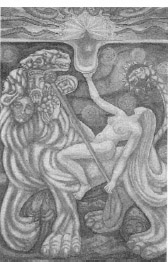
foursquare, mystic, wonderful, and the name of His House 418.”101
(Crowley note): This Name to be communicated to those worthy of that Initiation.
Well you must understand the feeling of it. Now how do you feel if you see nice chocolates & there, you get them & how good they taste. That is a picture of how you feel about those chocolates.102
—Harris to Crowley, March 25, 1942.
That is how at an exhibition of her paintings Lady Harris explained the Lust card to an inquisitive child. The principal deities connected with this card are those who, by tradition, are associated with the power of the female to arouse, harness, and direct the animal nature: Demeter and Astarte borne by lions; Venus repressing the Volcanic fire; Babylon the Great and the Beast of the Book of the Revelation.
Lust is perhaps the most beautiful and provocative of the entire deck and one of the trumps that exemplifies Crowley's visionary and initiatory experiences chronicled in The Vision and The Voice, particularly his vision of the 12th Aethyr.
While very tame by modern standards, the naked image of the Babylon/103 the Scarlet Woman, elevating the Holy Grail and straddling a fantastic and terrible seven-headed104 Beast is still too daring for many twenty-first-century sensitivities. In state and federal prisons throughout the United States, the Thoth Tarot (because of the Lust card) is considered pornographic contraband and its possession by inmates is forbidden. Even seasoned taroists who should know better, point to the Lust card as another example of Crowley polluting the tarot with his dirty mind.
Nothing could be further from the truth. The imagery is illustrative of the most sublime and universal spiritual arcanum—that of the ecstatic dissolution of all we are (referred to in Thelemic texts as the “blood of the Saints”) into the universal self of godhead (symbolized as a great “whore” and the Holy Grail she embodies). This is not—I repeat—this is not a statement concerning morality or immorality! It is perhaps the most perfect example of Crowley's use of an old Aeon “blaspheme” to illustrate a more accurate view of new Aeon spiritual perception.
For two thousand years, the symbol of the virgin has been the symbol of the pure vessel and the supreme female spiritual ideal in Western civilization. It's a wonderful symbol, as far as it goes, that deals with the great mystery of the descent of divine spirit into matter. The mystery of Babylon concerns an entirely different concept—that of the reabsorption of all evolving life and consciousness into Binah, the great supernal female. In this mystery, the symbol of the whore (who is indiscriminately receptive to all) becomes the supreme and holy image. Listen to how Crowley's angel of the 12th Aethyr describes her:
This is the Mystery of Babylon, the Mother of abominations, and this is the mystery of her adulteries, for she hath yielded up herself to everything that liveth, and hath become a partaker in its mystery. And because she hath made herself the servant of each, therefore she is become the mistress of all.105
The supreme spiritual message of this card may be summed up something like this: Eventually each of us will come to a level of consciousness so profoundly high that the only level higher is the universal consciousness of deity itself. Our dissolution into the infinite is the ultimate sacrifice, the ultimate marriage. Deity lusts for that moment when all her children will return to her. Someday, each one of us will also lust for that moment.
ATU XII THE HANGED MAN
The Spirit of the Mighty Waters
Elemental Trump of Water
Original Design: The figure of a hanged or crucified man. From a gallows shaped like the letter , (Daleth) hangs by one foot a young fair man. His other leg forms a cross with the suspending one. His arms, clasped behind his head, form and upright triangle, and this radiates light. His mouth is resolutely closed.106
Hebrew Letter: Mem (water).
Tree of Life: Path 23, joining Geburah—Severity to
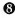
Hod—Splendor.Colors: Deep Blue; Sea-green; Deep Olive Green; White, flecked Purple.
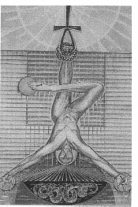
Let not the water whereon thou journeyest wet thee! And, being come to shore, plant thou the Vine and rejoice without shame.107
We will finish like Alice through the Looking Glass by having the whole pack on our heads. Goodnight.108
—Harris to Crowley, Fall, 1939.
I have long foreseen the ‘'Alice in Wonderland” conclusion of our labours, but that if you remember was the signal for the awakening to the beauty of life.109
—Crowley to Harris, December 19,1939.
To paraphrase what I said concerning the Hierophant, Atu XII is not your Aeon of Osiris Hanged Man. Neither is it the Hanged Man of the Aeon of Isis. Crowley makes a tremendous attempt to explain why this is so in The Book of Thoth. Please don't misunderstand me. I mean no disrespect when I use the words “attempt to explain,” and I am certainly not suggesting that I could explain these things any better. It is just very clear to me that, before Crowley sat down to write his commentary on this card, he must have swallowed a handful of l-think-I-will-try-to-explain-the-innermost-secret-of-life-and-all-the-mysteries-of-High Magick-and-the-Universe-in-general pills.
He gives it a pretty good try. He even offers us several very revealing paragraphs concerning the most profound secrets of sexual alchemy and magick that, for those who are interested in those subjects, will certainly be worth farther study and meditation (see chapter 11). Perhaps the reason he apparently goes so far afield in his comments is that he believed that the Hanged Man, as historically and traditionally understood, is now obsolete in a New Aeon tarot deck. In fact, he tells us to regard it as an evil legacy from the old Aeon and goes on to compare it rather unflatteringly with the appendix in the human body:
This card is beautiful in a strange, immemorial, moribund manner. It is the card of the Dying God; its importance in the present pack is merely that of the Cenotaph.”110
A cenotaph is a tomb or a monument erected to honor a person whose actual body is buried somewhere else. Be that as it may, he goes on to give us a very good Aeon-of-Horus interpretation of the Hanged Man, the highlights of which (even though I don't have any ITIWTTETISOLAATMOHMATUIG pills) I will try to summarize.
First, observe that the arms and legs of our crucified hero make the figure of a cross surmounting a triangle. Crowley tells us that this symbolizes “the descent of the light into the darkness in order to redeem it.”111 It is nothing less than the cosmic sacrifice that creates, sustains, and destroys the universe. Our perception of how we are part of this grand sacrifice has evolved over the aeons. The sacrifice meant one thing to our ancestors in the Aeon of Isis, another thing in the Aeon of Osiris, and now, as we shall see, means something altogether different in the present Aeon of Horus. (If, for some reason, you have not read chapter 6, I suggest that you do so before reading on.)
Crowley identifies the Aeon of Isis with the element water. This was an age when it was universally perceived that human life came from woman alone. The sacrifice was made by the woman on the altar of her own body, and the Hanged Man was the unborn baby who floated upside down in the water of the womb just prior to birth.
The Aeon of Osiris is identified with the element air, which is sympathetic to both water and fire. Therefore, in the Aeon of Osiris, the sacrifice was one of compromise. This was the age of the dying god, when a guy just couldn't be a real savior unless he first came out of the water (baptized, etc.) and then compromised his own body by allowing him self to be tortured, murdered, then hung or nailed to a tree to redeem the lives of his people. A couple of thousand years ago, this selfless gesture was a big step forward in spiritual politeness. As a matter of fact, for the Aeon of Osiris, it became the supreme formula of adeptship expressed by I N R I / I A 0 (see chapter 8).
The Aeon of Horus is identified with the element fire (represented by the Hebrew mother letter
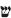
Shin and the Aeon trump). In the Aeon of Horus, the water of the Hanged Man and the fire of the Aeon don't get along at all. In this Aeon, Crowley warns, “The whole idea of sacrifice is a misconception of nature…”112 The gesture of sacrificial suicide is not only obsolete, it is downright counterproductive:But now, under a Fiery lord of the Aeon, the watery element, so far as water is below the Abyss, is definitely hostile, unless the opposition is the right opposition implied in marriage.”113
The marriage he is talking about is the “annihilation of the self in the Beloved.”114 This is symbolized in the card by the ankh (the union of the Rose and Cross, of male and female.) It is the devotional ecstasy that dissolves al sense of separateness that I wrote about in chapter 11. This “marriage,” as mystics and saints of every age and culture have tried to tell us, is the supreme sacrifice.
The Hanged Man of the Thoth Tarot still symbolizes the descent of the light into the darkness in order to redeem it, but the word “redeem” no longer implies an existing debt that needs to be paid. Instead, redemption in the Aeon of Horus is the noble duty of the enlightened to bring enlightenment to the unenlightened.
Please note how Lady Harris ingeniously uses projective geometry to link this card with other water-related cards. Try placing the Hanged Man top-to-top with the High Priestess and the Queen of Cups. Other items of interest include her stylized Enochian tablets in the background, and her use of the color green to inject a Venusian influence.
ATU XIII DEATH
The Child of the Great Transformers
The Lord of the Gate of Death
Zodiacal Trump of Scorpio
Mars Rules—Pluto Exalted
Original Design: A skeleton with a scythe mowing men. The scythe handle is a Tau.115
Hebrew Letter: Nun (fish).
Tree of Life: Path 24, joining Tiphareth—Beauty to Netzach—Victory.
Colors: Green Blue; Dull Brown; Very dark Brown; Livid Indigo Brown.
The Universe is Change; every Change is the effect of an Act of Love; all Acts of Love contain Pure Joy. Die daily!
Death is the apex of one curve of the snake Life: behold all opposites as necessary complements, and rejoice.116
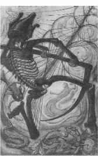
I will try out what you suggest. “More work for the undertaker” says I.117
—Harris to Crowley, Fall, 1939.
In Hamlet, Marcellus tell Horatio, “Something is rotten in the state of Denmark.” He might just as easily have said, “Something smells fishy.” Both statements are uncannily appropriate when the subject is the Death card. The Hebrew letter assigned to Death is Nun, which means “fish.” The fish is one of the most revered symbols of tenacious life and resurrection in the traditions of Western civilization. Dead fish decay quickly and smell terrible (in Denmark and everywhere else!), but the secret of life is in that stinky stuff.
It is very difficult to discuss the Death card without also discussing the next trump, Art. From an alchemical point of view, Death really should come after Art for the not-so-simple reason that Art foreshadows the final stage of the great work. Death is the final stage itself Even though it is not pictured in the Death card, our snake-wrapped Orphic egg—the latent seed of life that we first saw in the Magus card, whose elements were married in the Lovers, and which then was fertilized by the Hermit—is now entering the last stage of development before hatching into new life.
In a way, the Art card actually incorporates the Death card in its imagery. If you turn forward a few pages and look at the illustration of the Art card, you will see an androgyne figure pouring fire and water upon the heads of a lion and an eagle and then into a great cauldron. If you look closely at the cauldron, you wil^^ see the image of a raven perched upon a human skull. Lady Harris may as well have painted a sign on the cauldron that reads, “This is cauldron is the Death card.”
The emblem of the raven and skull is called the caput mortuum, and indicates the alchemical process that takes place inside the cauldron. That process is putrefaction, and putrefaction is what the Death card is all about:
In alchemy, this card explains the idea of putrefaction, the technical name given by its adepts to the series of chemical changes which develops the final form of life from the original latent seed in the Orphic egg.118
Things may be rotten in Denmark, but in the alchemy of tarot, the stink of putrefaction is the sweet smell of impending success. It is a threefold process that gently warms the Orphic egg during its last most sensitive phase before birth. If we were to look into the cauldron, we would see that process bubbling away as a scorpion, a serpent, and an eagle, the three images and aspects of Scorpio.
The scorpion is found in the lower right corner of the Death card, and symbolizes, according to Crowley, the lowest aspect of Scorpio.
The lowest is symbolized by the Scorpion, which was supposed by early observers of Nature to commit suicide when finding itself ringed with fire, or otherwise in a desperate situation. This represents putrefaction in its lowest form. The strain of environment has become intolerable, and the attacked element willingly subjects itself to change.”119
The middle aspect of Scorpio, Crowley explains, is represented as a serpent, which can be seen in the lower left corner:
The serpent is sacred, Lord of Life and Death, and its method of progression suggests the rhythmical undulation of those twin phases of life which we call respectively life and death120
The third symbol of Scorpio is the eagle that we see in the upper left corner of the card. The eagle, as described by Crowley, is a real gas!
The highest aspect of the card is the Eagle, which represents exaltation above solid matter. It was understood by the early chemists that, in certain experiments, the purest (i.e., most tenuous) elements present were given off as gas or vapour. 121
If all three of these aspects of putrefaction are in turn allowed to unfold perfectly, they generate the gentle heat necessary to incubate the Orphic egg in its final stage of development.
The Death card of the Thoth Tarot is the antithesis of those found in traditional packs. This is no stiff grim reaper standing on the Earth, indiscriminately mowing down people, young and old, humble and highborn. This Death is vivacious and flexible. He wears the crown of Osiris and dances madly on the bottom of the sea. Instead of mowing down the living, he uses his scythe to stir up bubbles of new lives from the out of the seemingly dead and decaying sediment. “So also,” Crowley observes, “the formula of continued life is death, or putrefaction.”122 Death is, thus, in truth, “the original secret male creative God.”123
ATU XIV ART
The Daughter of the Reconcilers, the Bringer forth of Life
Zodiacal Trump of Sagittarius
Jupiter Rules—Dragon's Tale Exalted
Original Design: The figure of Diana huntress. A winged and crowned goddess, with flashing golden belt, stands, and pours from her right hand the fame of a torch upon an eagle, while from her left hand she pours water from an urn upon a lion. Between her feet a Moon-shaped cauldron of silver smokes with perfiume124
Hebrew Letter: Samekh (serpent).
Tree of Life: Path 25, joining Tiphareth—Beauty to Yesod—Foundation.
Colors: Blue; Black; Blue-black; Cold dark Grey nearing black.
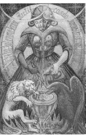
Pour thine all freely from the Vase in thy right hand, and lose no drop! Hath not thy left hand a vase?
Transmute all wholly into the Image of thy Will, bringing each to its token of Perfection!
Dissolve the Pearl in the Wine-cup: drink, and make manifest the Virtue of that Pearl!125
Temperance is a kettle of fish.126
—Harris to Crowley, date uncertain, 1939.
Sagittarius means “the archer”; the traditional image of this card is that of Diana the Huntress. We see echoes of this original theme in the two bows near the top of the card and the tiny upward-pointing arrow rising in the rainbow fumes of the cauldron. The celebrated Diana of Ephesis is portrayed in statuary as having many breasts. The deeply plunging neckline on the dress of the Art card's main figure reveals three columns of neatly stacked breasts reminiscent of the famous Ephesian statue of Diana.
With these exceptions, the Sagittarian imagery is almost completely smothered in alchemical symbolism. After all, as Crowley points out, “This card represents the Consummation of the Royal Marriage which took place in Atu VI”127 and Art is the “coagula” to the Lovers “solve” Also, in this card, the white tincture of the Empress is united with the red tincture of the Emperor.
We've already learned, in chapter 8, that the Magus, the Empress, and the Emperor represent the alchemical elements of mercury, salt, and sulfur. We also learned that these three principals, when combined and perfectly balanced, create the universal solvent, vitriol. What we haven't as yet learned is what to do with our vitriol. Just what are we supposed to dissolve with it? I guess the simplest answer would be to say that vitriol dissolves old life in order to create new life. Let's look at the Art card and see where that new life is going to come from.
First of all, notice that the figures in the forefront of the card are positioned before a huge golden egg. This is, of course, the Orphic egg, and everything we see happening in front of the egg is actually the secret work that is being done inside. Shimmering around the egg, as if to advertise the radiant life within, is a golden aura displaying in beautiful penmanship the alchemical motto: VISITA INTERIORA TERRAE RECTIFICANDO IMENIES OCCULTUMLAPIDEM-“Visit the interior parts of the earth: by rectification thou shalt find the hidden stone.”
Cooking up the potion that is making that visit possible is a strange and wonderful being whom we first met as two characters, the bride and groom, in Atu VI, the Lovers. The black King and white 2.1teen have now merged and become a single character with two heads. The white bride now has black hair and wears the golden crown; the black groom now has golden hair and wears the silver crown. Her/his arms are exposed to reveal that the body is also countercharged.
His/her dress is decorated with both bees and serpents, and she/he stands behind a cauldron into which he/she pours water from a silver chalice from his/her left hand, and fire from her/his right hand. Flanking the cauldron (as they flanked the Orphic egg in the Lovers) stand the lion and the eagle. They have also made a dramatic change. The lion has turned white and the eagle is now red, having transmuted to their opposite characteristic by the dual baptism of fire and water (the union of the white and red tinctures).
At the very bottom of the card, the fire and the water exist together in harmony. Crowley writes,
But this is only crude symbol of the spiritual idea, which is the satisfaction of the desire of the incomplete element of one kind to satisfy its formula by assimilation of its equal and opposite.128
I understand that, for many readers of this book, these forays into the strange and abstruse world of alchemy may seem like unwelcome detours from the subject of tarot. They are, however, Crowley's forays, and they are an important aspect of the Thoth Tarot that set it apart from the more traditional decks. The alchemical aspects of the Thoth Tarot are implicit in the fundamental structure of the tarot itself Indeed, until I became familiar with the alchemical processes Crowley introduces in The Book of Thoth, I really had no idea why the original title of the Temperance/Art card was “The Daughter of the Reconcilers, the Bringer forth of Life.”
ATU XV THE DEVIL
The Lord of the Gates of Matter
The Child of the Forces of Time
Zodiacal Trump of Capricorn
Saturn Rules—Mars Exalted
Original Design: The figure of Pan or Priapus. Levi's Baphomet is sound commentary on this Mystery, but should not be found in the text.129
Hebrew Letter: Ayin (eye).
Tree of Life: Path 26, joining Tiphareth—Beauty to Hod—Splendor.
Colors: Indigo; Black; Blue-black; Cold dark Grey, nearing black.
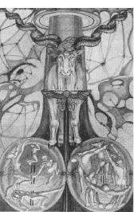
With thy right Eye create all for thyself, and With the left accept all that be created Otherwise!130
The Devil does not exist. It is a false name invented by the Black Brothers to imply a Unity in their ignorant muddle of dispersions. A devil who had unity would be a god.131
The Devil may not exist, but there is most definitely a Devil card in the tarot, and, in my opinion, he is the most universally misunderstood character in the entire deck. (But then, you probably guessed I would say that.)
This is the trump of Capricorn, the sign of the goat. Indeed, for the purpose of fortune telling, the Devil has truly been the scapegoat for all the perceived evils that could befall us, and the sinful temptations that are constantly luring us toward self-destruction. How convenient!
But if the Devil is supposed to be the card that represents evil, which card should we pick to represent good? Al the other trumps have the potential of representing the qualities of both good and evil. Why do we need one card just for evil?
Can't the Fool be thoughtless enough; the Magus larcenous enough, the High Priestess seductive enough, the Empress wicked enough, the Emperor tyrannical enough, the Hierophant bigoted enough, the Lovers unfaithful enough, the Chariot pretentious enough, Lust lascivious enough, the Hermit self-abusive enough, Fortune ill-fated enough, Adjustment unfair enough, the Hanged Man tormented enough, Death murderous enough, Art chaotic enough, the Tower catastrophic enough, the Star despondent enough, the Moon deceitful enough, the Sun narcissistic enough, the Aeon destructive enough, or the Universe cold and cruel enough to handle all the evil in the world?
It should be obvious that the Devil is something other than the ultimate evil. That something other is just what his full title proclaims. He is Lord of the Gates of Matter. That, in itself, can be pretty scary, especially if you've been convinced that earthly life is somehow an estrangement from God, and that all things on the material plane, including you and me, are inherently evil. Grow up!
Whatever the supreme being is, it would not be the supreme being if it weren't everything, including you and me—and the Devil. It seems pretty obvious that the Devil is just God as misunderstood by the ignorant and wicked. Crowley explains it like this:
This card represents creative energy in its most material form; in the Zodiac, Capricornus occupies the Zenith. It is the most exalted of the signs; it is the goat leaping with lust upon the summits of earth…. In this sign, Mars is exalted, showing in its best form the fiery, material energy of creation. The card represents Pan Pangenetor, the Al-Begetter.132
Crowley tells us elsewhere, that the Fool, the Hermit, and the Devil, “offer a threefold explanation of the male creative energy; but this card (The Devil) especially represents the masculine energy at its most masculine.”133 Masculine energy at its most masculine, indeed! Look at the card! I don't have to draw you a picture; Lady Harris could hardly have been more explicit. The whole card is the Devil. A magnificent three-eyed Himalayan goat stands before a tree and its two great transparent globular roots. Perhaps most interesting are the figures in the testes.
In traditional tarot decks, the Devil trump shows a woman and a man standing beneath the Devil in curious attitudes of worship and bondage. These figures are translated in the Harris painting as four female forms in the left testicle and four male forms in the right. The top male form bears the classic horned head of the Devil, who appears to have fought his way to the top. The pairs of broken lines are insinuative of chromosomes, and the starry rays at the equator of the globes suggest cellular division. This is the Devil the world has been taught to fear. He is life itself, unrestrained, in mad love and seeking to grow and unite with absolutely everything.
The formula of this card is then the complete appreciation of all existing things. He rejoices in the rugged and the barren no less than in the smooth and the fertile. Al things equally exalt him. He represents the finding of ecstasy in every phenomenon, however naturally repugnant; he transcends all limitations; he is Pan; he is All.134
In The Wake World,, Crowley spins a charming fairytale of a little girl's initiatory trip up the Tree of Life. Her name is Lola, and her guide is her Holy Guardian Angel, whom she calls her Fairy Prince. When they reach path 26 (that of Ayin and the Devil) they attend a strange banquet on a desolate heath.
It was midnight, and the Devil came down and sat in the midst; but my Fairy Prince whispered: “Hush! it is a great secret, but his name is Yeheswah, and he is the Saviour of the World.” And that was very funny, because the girl next to me thought it was Jesus Christ, till another Fairy Prince (my Prince's brother) whispered as he kissed her: “Hush! tell nobody ever, that is Satan, and he is the Saviour of the World.”135
ATU XVI THE TOWER
The Lord of the Hosts of the Mighty Planetary Trump of Mars
Original Design: A tower struck by forked lightning. Human figures thrown thence suggest the letter
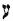
(Ayin) by their attitude.136Hebrew Letter: Pé (mouth).
Tree of Life: Path 27, joining Netzach—Victory, to Hod—Splendor.
Colors: Scarlet; Red; Venetian Red; Bright Red, rayed azure or emerald.
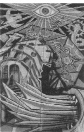
Break down the fortress of thine Individual Self, that thy Truth may spring free from the ruins!137
The House of God appears to me as a vortex not a mouth, or is it yours which can't be filled by mortal effort try as you may.138
—Harris to Crowley, date uncertain.
Have you ever watched the phases of a large construction project? In the first phase, the land is cleared by smoke-belching bulldozers. Trees are ruthlessly ripped from their roots. Grass and vegetation is plowed under and raked away, then cut up or burned. It is a scene of utter destruction and desolation. If you were to take a photograph of the site at the end of phase one, you would have a picture of a catastrophe. However, in a year or two, the picture changes. Construction has taken place, and now there stands a magnificent building, landscaped with grass and trees and flowers, and perhaps a beautiful little waterfall and lake with a swan or two.
In the Thoth Tarot, phase one is represented by Atu XVI, the Tower, and phase two is represented by Atu XX, the Aeon. The Tower is not the end of the world; it just looks like the end of the world. It is, quite simply, what Crowley calls “the manifestation of cosmic energy in its grossest form.”139
The Tower is the planetary trump of Mars, and it incorporates most of the images that characterize traditional versions—;a blasted tower with human figures falling from it. Most older versions, however, show the tower being struck by lightning from above, as if by some heavenly wrath. In Harris's vision, the tower is blasted from below by flames belching from the mouth of the underworld (The Hebrew letter Pé means mouth). This is a most significant reverse in symbolic imagery. Another feature unique to the Harris version is the presence of a large eye at the top of the card that seems to radiate a zigzag of lightning or fire that may be the spark that has ignited the flames from the mouth below.
In The Book of Thoth, this eye, which Crowley refers to alternately as the Eye of Horus and the Eye of Shiva, causes him to wax quite philosophic. He even teases us with comments relating to sex magick and the eye:
There is a special technical magical meaning, which is explained openly only to initiates of the Eleventh degree of the O.T.O.; a grade so secret that it is not even listed in the official documents. It is not even to be understood by study of the Eye in Atu XV. Perhaps it is lawful to mention that the Arab sages and the Persian poets have written, not always guardedly, on the subject.140
If all this “eye” stuff is so secret, why even bring up the subject? This is an extremely narrow and esoteric reference that Crowley knew full well would not be understood or appreciated by the vast majority of readers. Obviously, the eyes refer to various body openings and the psychic centers to which they are linked. While al this is very interesting from a clinical sex-magick point of view, it really doesn't help us too much in understanding the general meaning of this trump. The concept of the Eye of Shiva, on the other hand, does.
The Hindu Trinity of Brahma, Vishnu, and Shiva respectively create, sustain, and destroy the universe. Shiva is the God of Destruction and, to destroy the universe, Crowley, warns, he need only open his eye.
Shiva is represented as dancing upon the bodies of his devotees. To understand this is not easy for most western minds. Briefly, the doctrine is that the ultimate reality (which is Perfection) is Nothingness. Hence al manifestations, however glorious, however delightful, are stains. To obtain perfection, all existing things must be annihilated.141
The traditional title of the Tower is “The House of God,” or “Destruction of the House of God.” In chapter I, verse 57, of The Book of the Law, the goddess Nuit makes a direct reference:
Invoke me under my stars! Love is the law, love under will. Nor let the fools mistake love; for there are love and love. There is the dove, and there is the serpent. Choose ye well! He, my prophet, hath chosen, knowing the law of the fortress, and the great mystery of the House of God.
We see the dove and the serpent near the great eye at the top of the card. The dove has an olive branch in its mouth. Crowley desribes the image like this:
The Serpent is portrayed as the Lion-Serpent Xnoubis or Abraxas. These represent the two forms of desire; what Schopenhauer would have called the Will to Live and the Will to Die. They represent the feminine and masculine impulses; the nobility of the latter is possibly based upon recognition of the futility of the former. This is perhaps why the renunciation of love in al the ordinary senses of the word has been so constantly announced as the first step towards initiation. This is an unnecessarily rigid view. This Trump is not the only card in the Pack, nor are the “will to live” and the “will to die” incompatible.142
Placed in perspective, this is not such a bad card after al. The citizen of the Aeon of Horus is no longer to fear natural processes depicted in the Tower. When the Duquette's own Crowned and Conquering Child (our son, Jean-Paul) was four years old, he asked me what will eventually happen to the world. I told him that nobody knows for sure, but that the Hindus worship a God called Shiva who is responsible for destroying the universe. ''Al Shiva has to do is open his eye,” I said, “and the universe is completely destroyed. What do you think of that?” Without a moment's hesitation he answered, “Then he closes his other eye.”
I'm still thinking about that.
ATU XVII THE STAR
The Dweller between the Waters
Zodiacal Trump of Aquarius
Saturn Rules, Neptune Exalted
Original Design: The figure of a water-nymph disporting herself. A woman, naked and kneeling on her left knee, pours from a vase in her right hand silver waters into a river, by which grow roses, the haunts of coloured butterflies. With her left hand, she pours golden waters over her head, which are lost in her long hair. Her attitude suggests the Swastika. Above flames a great star of seven rays.143
Hebrew Letter: Hé (window).
Tree of Life: Path 15, joining Chokmah—Wisdom to Tiphareth—Beauty.
Colors: Violet; Sky Blue; Bluish Mauve; White, tinged purple.
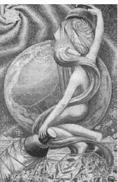
Pour water on thyself thus shalt thou be a Fountain to the Universe.
Find thou thyself in every Star!
Achieve thou every possibility!144
I think, looking at the finished cards you will remember all the sequences you have forgotten & I shall be crushed by alterations which will confuse the structural design & any spectator without your knowledge & so suffer little children to come unto thee & confuse them not by too much symbolism & stay thy hand from poor Frieda's tormented visions.145
—Harris to Crowley, date uncertain.
Drawing from imagery found in the first chapter of The Book of the Law, the Star is one of the most intensely Thelemic cards in the deck. To truly appreciate its secrets, one must be familiar with the contents of that chapter and cognizant of its possible meanings. The central subject is Nuit (Nuith) herself. Here, she is not pictured as the infinite arch of the night sky (as we see her on the Stèle or Atu X, the Aeon), but tangibly personified as a beautiful goddess.
The three seven-pointed stars that populate this card are versions of the Star of Babalon, and reveal to us (if we haven't already figured it out) that Nuit and Babalon are, to Crowley, two aspects of the same goddess: “Babalon,” he tells us, “is yet a further materialization of the original idea of Nuith; she is the Scarlet Woman, the sacred Harlot who is the lady of Atu XI.”146 He also refers to the seven-pointed star as “the Star of Venus, as if declaring the principal characteristic of her nature to be Love.”147
The abode of Babalon/Nuit on the Tree of Life is the third sephira, Binah, the Supernal Sother. In the great name, Yod Hé Vau Hé, the mother is the first Hé. It makes perfect sense to attribute Hé to this trump, which presents the sublime image of the goddess of infinite space.
The Harris Star is very faithful to the original description (see above). She even includes the roses and butterflies (seen in the lower right corner) that are absent in more traditional decks. The river, which is a bit hard to see, flows at the bottom of the card and is demarcated by hills on the distant shore. Perhaps the most exciting departure from the traditional versions of the Star is the huge celestial globe that dominates the card. This globe is often mistakenly identified as the Earth. If it were the Earth, it would dramatically diminish the spiritual and cosmic scale of this card.
The celestial globe represents the entire heavens surrounding the Earth. Therefore, al other images on this card that are placed outside of the celestial sphere must represent spiritual environments that transcend even the concept of infinite space. The largest and smallest of the three stars are found outside the celestial sphere: the former spins counterclockwise like a cosmic pinwheel in the upper left corner of the card; the latter tumbles clockwise like a tiny star-seed from the golden bowl in the goddess's right hand. The third star whirls counterclockwise on the celestial sphere itself
The two cups in her hands, Crowley writes, are fashioned as breasts, “as it is written, ‘the milk of the stars from her paps; yea, the milk of the stars from her paps.”' “From the golden cup,” he continues, “she pours this ethereal water, which is also milk and oil and blood, upon her own head, indicating the eternal renewal of the categories, the inexhaustible possibilities of existence.”148 Crowley completes the description thus:
The left hand, lowered, holds a silver cup, from which also she pours the immortal liquor of her life. (This liquor is the Amrita of the Indian philosophers, the Nepenthe and Ambrosia of the Greeks, the Alkahest and Universal Medicine of the Alchemists, the Blood of the Grail; or, rather, the nectar which is the mother of that blood.”148
Traditionally, the Star is the card of hope—the promise of things unseen. What is the hope that Nuit offers us? What is the promise of our star goddess? I wish I could simply reprint the entire first chapter of The Book of the Law and show you, but this short excerpt might give you some idea:
I give unimaginable joys on earth: certainty, not faith, while in life, upon death; peace unutterable, rest, ecstasy; nor do I demand aught in sacrifice.149
ATU XVIII THE MOON
The Ruler of the Flux and Reflux
The Child of the Sons of the Mighty
Zodiacal Trump of Pisces
Jupiter Rules—Venus Exalted
Original Design: The waning Moon. Below, a path leads between two towers, guarded by jackals, from the sea, wherein a Scarabus marcheth landwards.”150
Hebrew Letter: Qaph (back of head).
Tree of Life: Path 29, joining Netzach—Victory to Malkuth—Kingdom.
Colors: Crimson (ultra Violet); Buff, flecked silver White; Light translucent pinkish Brown; Stone color.
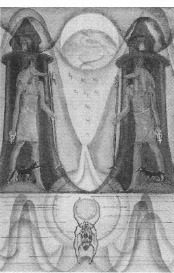
Let the Illusion of the World pass over thee unheeded, as thou goest from the Midnight to the Morning.151
In this Trump, her lowest avatar, she joins the earthy sphere of Netzach with Malkuth, the moon of witchcraft and abominable deeds. She is the poisoned darkness which is the condition of the rebirth of light.152
There is no doubt about it, this is a spooky card. It represents the light that darkness creates. It is the light that illuminates your dreams—;and your nightmares.
We recall that the trump attributed to the Moon is Atu II, the Priestess. She is the waxing Moon and represents Luna in her higher aspect, that of forming a link between the human and the divine. (The path of the Priestess crosses the Abyss and joins Tiphareth and Kether.) Atu XVIII, the Moon, is a very different aspect of Luna, and the most cheerful thing I can think to say about it is, “It will change.”
Now, before many of my brothers and sisters in the Craft take offence, let me hasten to point out that the “witchcraft” Crowley is referring to in the above quote is not the nature-loving and life-affirming religions of the neopagan movements that have proliferated around the world since his death in 1947. It is more the imagined witchcraft spawned in the tortured and obscene fantasies of the fanatic witch hunters.
The moonlight of Atu XVIII is that which illuminates the phantasmagoric nightmares of al of us who cannot acknowledge the dark horrors of our own fears. The Moon card shows a path through and beyond this nightmare, but it is not an easy path, and the myths of all ages and cultures prove that this journey through “the poisoned darkness” is an obligatory chapter in every hero's quest. As Crowley warns:
This path is guarded by Tabu. She is uncleanliness and sorcery. Upon the hills are the black towers of nameless mystery, of horror and of fear. All prejudice, all superstition, dead tradition and ancestral loathing, all combine to darken her face before the eyes of men. It needs unconquerable courage to begin to tread this path.153
Harris's rendering is disturbingly haunting, but it is not too dissimilar to the traditional image. The path runs between two towers guarded by twin figures of the Egyptian god Anubus, god of embalming and guardian of cities of the dead. Poison blood drips from the dying Moon. The creature walking out of the water at the bottom of the card represents the scarab beetle, symbolic of the Egyptian god Kephra, who is the god of the Sun at midnight.
Traditional decks usually show a crawfish, or even a lobster, instead of the scarab, and the symbolism of the Lord of the Sun at midnight becomes somewhat lost in memories of melted butter. I must confess, Harris's scarab doesn't look very scaraby either. In fact, it is a water spider. Nevertheless, it carries the Sun out of the dark water and, by doing so, assures us that this awfJ. night will eventually come to an end. In The Book of Thoth, Crowley also assures the courageous seeker in his last words concerning this card:
One is reminded of the mental echo of subconscious realization, of that supreme iniquity which mystics have constantly celebrated in their accounts of the Dark Night of the Soul. But the best men, the true men, do not consider the matter in such terms at all. Whatever horrors may afflict the soul, whatever abominations may excite the loathing of the heart, whatever terrors may assail the mind, the answer is the same at every stage: “How splendid is the Adventure!”154
ATU XIX THE SUN
The Lord of the Fire of the World
Original Design: A Sun. Below is a wall, in front of which, in a fairy ring, two children wantonly and shamelessly embrace. 155
Hebrew Letter: Resh (head).
Tree of Life: Path 30, joining Hod—Splendor to Yesod—Foundation.
Colors: Orange; Gold Yellow; Rich Amber; Amber, rayed red.
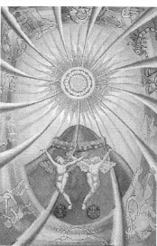
Give forth thy light to all without doubt: the clouds and shadows are no matter for thee.
Make Speech and Silence, Energy and Stillness, twin forms of thy play!156
Every man and every woman is a star.157
In fortune telling traditions, the Sun is often interpreted as the card representing the querent, or the face the querent shows to the world. This indicates to me that, deep down inside, all of us are inherently aware that we are ultimately solar beings. Crowley explains:
This is one of the simplest of the cards; it represents Heru-ra-ha, the Lord of the New Aeon, in his manifestation to the race of men as the Sun spiritual, moral, and physical. He is the Lord of Light, Life, Liberty and Love. This Aeon has for its purpose the complete emancipation of the human race.158
That is quite a statement, and I believe Crowley meant every word of it. Whenever I am asked to explain the philosophy or, if you prefer, the religion of Thelema, the first thing I usually tell people is, “It is a modern form of Sun worship.” But then, I am quick to add, “And when I use the word ‘Sun,' I am also referring to myself.”
Whether or not Crowley would have agreed with my gross generalization is debatable. I believe, however, that it does describe in the most primitive terms the essence of Thelema. Now that human consciousness has been subtly “mutated” with the knowledge that Sun continually exists—that it neither dies at night nor plunges toward extinction in the autumn—we as a race are poised to identify our own consciousness with the same phenomenon. Just as sunlight is perpetual, consciousness is continuous. Death is an illusion every bit as much as night is an illusion. Immortality is simply consciousness of the continuity of existence.
Heru-ra-ha is a unique name for the two opposite and equal forms of the Egyptian god Horus. Hoor-pa-kraat, is the passive, innocent, god of silence and infinite potential, often portrayed as a baby curled in the fetal position, pressing his thumb or forefinger to his lips. Ra-Hoor-Khut159 is the active, violent, hawk-headed avenger of the gods. Combined under the one name Heru-ra-ha, they are the divine expression of the passive/active dynamics of the element Spirit.160 Harris depicts the classic Egyptian images of both these gods in Atu XX, the Aeon.
Why should the Sun, the ultimate symbol of unity and singularity in our solar system, be identified with this double nature? From time immemorial, the doctrine of twin suns has bubbled secretly in the sanctuaries of the mysteries. Ancient traditions speak of a twin of Earth's Sun about which it and our entire solar system rotate in a cycle dance of hundreds of millions of years. Early Gnostic Christians dubbed Satan the twin of Christ, suggesting a great solar mystery hidden in the relationship.
Whatever may have been the original circumstances and motives that created these ancient traditions, modern science affirms that the secret of the Sun is indeed the perpetual struggle of two titanic forces: the active, thermonuclear process that burns the Sun's fuel and radiates light and energy outward into space, and the passive, gravitational presence of the Sun's own mass. The former keeps the Sun from collapsing in upon itself; the later keeps the burning process perpetually contained and stable.
The twin babies in the Fool card, and the children and the bride and groom in the Lovers are earlier tarot incarnations of the two dancing children we find in the Sun card. According to Crowley:
They represent the male and female, eternally young, shameless and innocent. They are dancing in the light, and yet they dwell upon the earth. They represent the next stage which is to be attained by mankind, in which complete freedom is alike the cause and the result of the new access of solar energy upon the earth.161
ATU XX THE AEON
The Spirit of the Primal Fire
Elemental Trump of Fire and of Spirit
Original Design: Israfel blowing the last trumpet. The dead arising from their tombs. Angel blowing a trumpet, adorned with a golden banner bearing a white cross. Below, a fair youth rises from a sarcophagus in the attitude of the god Shu supporting the firmament. On his left, a fair woman, her arms give the sign of water—an inverted triangle on the breast. On his right a dark man gives the sign of fire—an upright triangle on the forehead.162
Tree of Life: Path 31, joining Hod—Splendor to Malkuth—Kingdom.
Colors for Fire: Glowing Orange Scarlet; Vermilion; Scarlet, flecked gold; Vermilion, flecked crimson; and Emerald.
Colors for Spirit: White merging into Grey; Deep Purple, nearly Black; The seven prismatic colors (violet outside); White, Red, Yellow, Blue, Black (this outside).
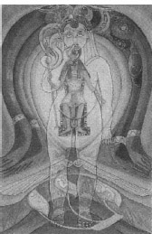
Be every Act an Act of Love and Worship!
Be every Act the Fiat of God!
Be every Act a Source of radiant Glory.163
Ra-Hoor-Khuit hath taken his seat in the East and the Equinox of the Gods.164
The traditional name of this card is Judgment, or The Last Judgment. The traditional design shows the Archangel Israfel blowing his trumpet to announce the end of the world as the dead arise from their tombs. In chapter 6, which is actually an expanded commentary on this card, I attempted to explain why Crowley replaced The Last Judgment with the Aeon in the Thoth Tarot. The reader who has not yet read that chapter is strongly advised to do so now. I will sum up what I wrote there simply by saying that, according to Crowley, the Last Judgment trump is now obsolete. The event that it depicted (the destruction of the world by fire) has already occurred. The world we are talking about, of course, is the spiritual Age of Osiris. the Aeon card of the Thoth Tarot depicts the spiritual forces that initiated the next age, the Aeon of Horus.
Crowley saw this event as a magical changing-of-the guard that was foreshadowed symbolically by one of the regular seasonal ceremonies of the Golden Dawn. Every six months, the ritual officers of that order were ceremonially promoted one chair up, and new secret passwords were issued. In that ritual, the officer who had formerly served as second-in-command (who, in that position, had magically assumed the identity of the Egyptian God Horus) was installed to serve as Hierophant (symbolized by Osiris) for the next six months. The Book of the Law calls the cosmic version of this ceremony The Equinox of the Gods.
Horus is the God of Force and Fire, and his ascension as Lord of the New Aeon spiritually destroys the old world by fire. It only looks like the end of the world to those of us who cannot accept the possibility that old spiritual points of view can ever be replaced by new ones.
As we learned in chapter 5, Crowley asserted that the latest Equinox of the Gods took place on March 20, 1904 E.v. in Cairo. Triggering the events that led up to this moment was the psychic possession of Crowley's wife, Rose, and their discovery of a twenty-fifth dynasty funeral stèle. Among many other features, the stèle shows the God Horus (Ra-Hoor-Khuit) on a throne. Before him is a table of offerings. Standing beside the table is the deceased, Ankh-af-na-Khonsu.
Nuit (Nut), the goddess of the night sky and infinite space, arches her body over the entire top section of the stèle. Directly beneath her heart is a winged solar disk that The Book of the Law refers to as the god Hadit.
In Atu XX, the Aeon, Harris interprets the stèle in one of the most colorful and aesthetically pleasing of all the trumps. The Goddess Nuit, her body filled with stars, her breasts alive with the milk of whirling galaxies, forms a beautiful blue omega as she bends in ecstasy around an immense egg containing the seated image of Ra-Hoor-Khuit. He holds the phoenix wand in his right hand. His left hand is empty. Standing as a transparent essence before Ra-Hoor-Khuit is his twin, Hoor-pa-kraat (see the Sun), his finger at his lips in the sign of silence. His head is shaven (except for his Horus lock) and crowned with two Uraeus serpents.
The God Hadit, pictured as the winged solar disk, is nearly camouflaged by the entire scene. This is most appropriate, for these are among his open words in The Book of the Law:
In the sphere I am everywhere the centre, as she, the circumference, is nowhere found. Yet she shall be known & I never. 165
The Hebrew letter Shin is assigned to the Aeon, and a large Shin containing three embryonic figures appears at the bottom of the card. It fames in front of a very stylized set of scales, perhaps pointing to the Aeon that will follow the Aeon of Horus, that of Maat, the goddess of justice and balance.
Crowley ends his discussion of this card with a comparison of the world events of approximately two thousand years ago, at the advent and birth of the last Aeon. His words carry a chilling but ultimately hopeful message:
The time for the birth of an Aeon seems to be indicated by great concentration of political power with the accompanying improvements in the means of travel and communication, with a general advance in philosophy and science, with a general need of consolidation in religious thought. It is very instructive to compare the events of the five hundred years preceding and following the crisis of approximately 2,000 years ago, with those of similar periods centred in 1904 of the old era. It is though far from comforting to the present generation, that 500 years of Dark Ages are likely to be upon us. But if the analogy holds, that is the case. Fortunately, to-day we have brighter torches and more torch-bearers.166
ATU XXI THE UNIVERSE
The Great One of the Night of Time
Planetary Trump of Saturn
Elemental Trump of Earth
Original Design: Should contain a demonstration of the Quadrature of the Circle. An ellipse, composed of 400 lesser circles. At the corners of the card a man, an eagle, a bull, and a lion. Within the circle, a naked shining figure with female breasts, with closed eyes in the sign of Earth—right foot advanced, right hand advance and raised, left hand lowered and thrown back. The hands grip each a ray of dazzling light, spiral, the right hand being dextro-and the left hand lævo-rotary. A red scarf conceals the fact of male genital organs, and suggests by its shape the letter
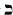
. Such is the conventional hieroglyph.167Hebrew Letter: Tau (cross).
Tree of Life: Path 32, joining © Yesod—Foundation to ® Malkuth—Kingdom.
Colors for Saturn: Indigo; Black; Blue-black; Black, rayed blue.
Colors for Earth: Citrine; Olive; Russet and Black; Amber; Dark Brown; Black, flecked Yellow.
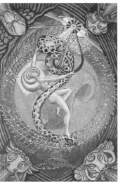
Treat time and all conditions of Event as Servants of thy Will, appointed to present the Universe to thee in the form of thy Plan.
And: blessing and worship to the prophet of the lovely Star.168
The elemental Cherubims are quite jolly but the Little Lady has twisted and turned ‘til I am insane with the wiggling lines and I've done about forty drawings of her. 169
—Harris to Crowley, date uncertain.
For many years, the Universe has served as the cover image of Weiser editions of The Book of Thoth. It is without question one of the most recognizable cards of the Thoth Tarot. Familiar as it is to us, it is one of the most complex and mysterious cards in the deck. There are several elements in the card I don't understand at all. For instance, what is the black crescent-shaped object in the goddess's right hand? I don't have a clue. I can't find any reference to it in The Book of Thoth. If Crowley explains it in any other writings, I confess it has escaped me completely. My best guess is that it is a sickle (not an inappropriate weapon for a Saturnian goddess). It looks like she is sticking the sharp end right in the middle of the big eye at the top of the card, perhaps causing it to erupt in glories of light—but I can't say for sure.
There are several other images in the card that I didn't see until I had the card enlarged and enhanced. I'll talk about those in a moment. First, let's start with what we know from Crowley's own comments:
In the card itself there is consequently a glyph of the completion of the Great Work in its highest sense, exactly as the Atu of the Fool symbolizes its beginning. The Fool is the negative issuing into manifestation; the Universe is that manifestation, its purpose accomplished, ready to return. The twenty cards that lie between these two exhibit the Great Work and its agents in various stages. The image of the Universe in this sense is accordingly that of a maiden, the final letter of the Tetragrammaton170
Atu XXI, the Universe, represents both the planet Saturn and the element earth. We already know earth is in some ways a real second-class citizen in the Qalistic universe. We also know that because earth is lowest, it ironically plays a pivotal role in the cosmic scheme of things.
Saturn is also very special. As Binah's representative, it is the only planetary sphere above the Abyss. In many ways, it is the highest of the high. At the same time, on the Tree of Life, the path of the Universe (32) leads from Yesod (the ninth and last true sephira on the Tree) down into Malkuth (which is only pendant to the Tree, a cosmic dingleberry). How strange that the highest high and the lowest low would be represented by the same card. The Universe must indeed hold many mysteries, something Crowley confirms in this passage:
The first and most obvious characteristic of this card is that it comes at the end of all, and is therefore the complement of the Fool. It is attributed to the letter Tau. The two cards together accordingly spell the word Ath, which means Essence. All reality is consequently compromised in the series of which these two letters form the beginning and the end. This beginning was Nothing; the end must therefore be also Nothing, but Nothing in its complete expansion, as was previously explained. 171
As we see from the original description, Atu XXI, the Universe, should contain a demonstration of the “Quadrature of the Circle.” Good Luck! For centuries, it has been the quest of mystic mathematicians to square the circle or construct, by using only a compass and a straight edge, a square of precisely the same circumference as that of any given circle. It would be the geometric equivalent of building the New Jerusalem—the marriage of the eternal circle of heaven to the terrestrial square of Earth.
In 1882, German mathematician Carl Louis Ferdinand von Lindemann finally demonstrated that the perfect squaring of the circle is a mathematical impossibility. However, thousands of years of attempting the impossible has produced a body of graphic and architectural devices that have supplied the patterns and proportions for temples and cathedrals, sacred statuary, and paintings. It has also provided us with the blueprint for Atu XXI, the Universe.
Bold seekers have also introduced into this quest collateral data, such as the mysterious numbers that appear in the Old and New Testaments, and the estimated size and ratios of planetary orbits. The mental stimulation and ecstasy such mathematical gymnastics induce can be addictive, to the point of triggering emotional instability. British architect, William Stirling, author of the monumental work The Canon: An Exposition of the Pagan Mystery Perpetuated in the Cabala as the Rule of All the Arts, died most hideously while attempting to sever his own head from his body.172 (One can think too much about such things.)
I confess that I become hopelessly lost whenever I try to follow the logic and numbers of transcendental mathematics. What I do understand is the aesthetic beauty of the figures such musings produce when translated into graphic designs, especially the diagram called, appropriately, the New Jerusalem. Because I cannot explain exactly why this diagram is an attempt to square the circle, I will instead try to show you how it is constructed and allow you decide whether or not to pursue its mysteries further. (But, please, try not to lose your head!)
The New Jerusalem and the Universe trump both start with a special oval called a vesicapiscis (a fish bladder). We see the vesica in two places on the Universe card: as the large oval that touches the top, bottom, and sides of the card, and as the eye at the top right section of the large vesica. The small eye vesica appears either to be projecting the images on to the card, or drawing them all back inside itself.
It is very easy to create a vesica piscus, and the beginning of its construction employs Qabalistic concepts that by now should be familiar to you.
1. First, you must have two circles of equal size that intersect at their centers. (The first circle is Kether, which unites with its reflection, Chokmah, to create the opening, the Yoni of Mother Binah from which will issue al creation). The vesica was the floor plan of many cathedrals of the late Renaissance and early Baroque periods, structures that were nearly all dedicated to Our Lady.
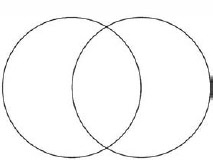
2. Next, enclose and center the vesica inside a third circle the same size as the other two (It is as though the supernal triad has made and positioned the vesica). It looks like an eye, doesn't it?
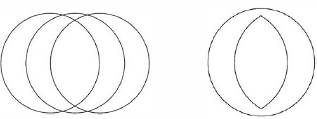
3. Enclose the vesica with a square that is the same length and breadth as the length of the vesica.
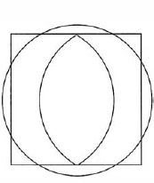
4. Draw four circles at the diagonal corners whose centers intersect the great circle, and whose circumferences touch the vesica.
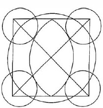
5. Finally, enclose all with in a square.
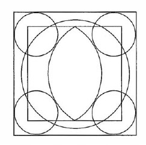
There it is. This is the basic model for both the traditional and the Crowley-Harris versions of the Universe. You may also recognize this design as pattern for many paintings and stained-glass windows that depict Christ, or the Holy Family, or the Trinity surrounded by the images of the angel or man, the lion, the bull, and the eagle. In the Harris-Crowley card, the four Kerubic creatures are placed in the corners in the same manner as in the Hierophant.
For reasons that have never been very clear to me, Christian believers are told these creatures represent respectively the four Evangelists: Mathew, Mark, Luke, and John. Jews naturally recognize them as the symbols for the four tribes of Israel, who were assigned the corner positions in the camp of the Is raelites:173 the man of the tribe of Reuben, the lion of Judah, the bull of Ephriam, and the eagle of Dan. We, of course, recognize them as the four Kerubic beasts.
Even though the original description states the vesica should be an ellipse composed of 400 lesser circles (a reference to the Hebrew letter Tau assigned to this card, which enumerates to 400), Lady Harris does well to give us seventy-two circles174 (yes, I counted them), which provocatively suggest (to me at least) the ribbed skeleton of an infinitely huge serpent.
Now that we know that Lady Harris gave it the old college try to squaring the circle, let's get out our magnifying glass and look at the all the wonderful things she puts inside it. At the bottom point of the vesica is a skeletal structure that looks a bit like the blueprint of a building. That is exactly what it is—it is the house of matter. If the structure were projected in three dimensions, we would see a four-sided building and that each of the tiny vertical lines represents one of the ninety-two then known elements. They are ingeniously arranged in hierarchical order and joined by a series of diagonal lines that form a diagram of the chemical building blocks of the material universe. The model for this design first appeared in The Bases of Modern Science, by J. W. N. Sullivan.175
Impressive as this diagram is, Harris superimposes it upon a structure even more magnificent and mysterious. If you look carefully, you will see that Sullivan's house of matter is projected upon the largest of three pyramids suggestive of those at the Giza complex. Like the Great Pyramid at Giza, the apex of the large pyramid in the center of Harris's drawing is also covered with finishing stones, making it appear to swell a bit at the top.
Crowley makes no reference to these pyramids in The Book of Thoth, and my poor mind boggles at the possible implications. He does mention something we can't see—at least I can't see it:
In the centre, a wheel of Light initiates the form of the Tree of Life, shewing the ten principal bodies of the solar system. But this Tree is not visible except to those of wholly pure heart. 176
Well I guess I'm busted! Emperor Lon has no clothes! As if I really need the Master Therion to tell me I'm not wholly pure of heart! I'm really not surprised I can't see his damned Tree of Life in the center of this card.
What I can see is a beautiful green sphere upon which sits a complex Möbius strip.177 Actually, it's not that complex. It's just a regular Möbius strip made from three half twists rather than just one. (Yes, I made one to be sure.) The endlessness of a Möbius strip makes it a perfect and beautiful glyph of the infinite, and it is my guess that Lady Harris replaced Crowley's invisible Tree of Life with this brilliantly appropriate device.
The main feature of the card is the beautiful “Little Lady” Crowley refers to in this passage:
In the present card she is represented as a dancing figure. In her hands she manipulates the radiant spiral force, the active and passive, each possessing its dual polarity. Her dancing partner is shown as Heru-Ra-Ha of Atu XIX.178
Is she Nuit/Babalon, goddess of the sphere of Saturn, Binah? Or is she the virgin princess of the sphere of earth, Malkuth? She is, in truth, both the great mother and the virgin daughter of eternity.
What could possibly serve as the model for this goddess who is at once the beginning and the end and all things in between? What vision could have emboldened Lady Harris to give such solid form to this formless and eternal process?
On the afternoon of December 6, 1909, between the hours of2:00 and 4:15 p.m. in a lonely valley of fine sand in the desert near Bou-Sada, North Mrica, Aleister Crowley, accompanied by the poet Victor Nueberg, who served as his servant and magical scribe, crossed the Abyss179 and experienced the terrible vision of the tenth Enochian Aethyr. The details of this ordeal are chronicled in The Vision and the Voice, 180 and remain the central features of one of the most breathtaking and remarkable magical visions ever recorded.
The next evening, December 7,1909, between 9:30 and 11:10 p.m., while his consciousness still thrilled with the bliss of that magical plateau, he experienced the vision of the next Aethyr, the ninth. I have excerpted a large portion of that vision, because I believe that there is nothing I or anyone else could say about Atu XXI, the Universe, that could be more profound or relevant. It is nothing less than an account of a face-to-face encounter with the goddess of Atu XXI, the Universe.
She has very deep eye-lids, and long lashes. Her eyes are closed, or nearly closed. It is impossible to say anything about her. She is naked; her whole body is covered with fine gold hairs, that are the electric flames that are the spears of mighty and terrible Angels whose breast-plates are the scales of her skin. And the hair of her head, that flows down to her feet, is the very light of God himself. Of all the glories beheld by the seer in the Aethyrs, there is not one which is worthy to be compared with her littlest finger-nail. For although he may not partake of the Aethyr, without the ceremonial preparations, even the beholding of this Aethyr from afar is like the partaking of all the former Aethyrs.
The Seer is lost in wonder, which is peace.
And the ring of the horizon above her is a company of glorious Archangels with joined hands, that stand and sing: This is the daughter of BABALON the Beautiful, that she hath borne unto the Father of M. And unto all hath she borne her.
This is the Daughter of the King. This is the Virgin of Eternity. This is she that the Holy One hath wrested from the Giant Time, and the prize of them that have overcome Space. This is she that is set upon the Throne of Understanding. Holy, Holy, Holy is her name, not to be spoken among men. For Koré they have called her, and Malkah, and Betulah, and Persephone.
And the poets have feigned songs about her, and the prophets have spoken vain things, and the young men have dreamed vain dreams; but this is she, that immaculate, the name of whose name may not be spoken. Thought cannot pierce the glory that defendeth her, for thought is smitten dead before her presence. Memory is blank, and in the most ancient books of Magick are neither words to conjure her, nor adorations to praise her. Will bends like a reed in the tempests that sweep the borders of her kingdom, and imagination cannot figure so much as one petal of the lilies whereon she standeth in the lake of crystal, in the sea of glass.
This is she that hath bedecked her hair with seven stars the seven breaths of God that move and thrill its excellence. And she hath tired her hair with seven combs, whereupon are written the seven secret names of God that are not known even of the Angels, or of the Archangels, or of the Leader of the armies of the Lord.
Holy, Holy, Holy art thou, and blessed be Thy name for ever, unto whom the Aeons are but the pulsings of thy blood.181
And so we come to both the end and beginning of the trumps. I know that, for many of you, the trip has been pretty bumpy in spots. Perhaps you think that you've bitten off more than you can chew and that you will never completely understand the tarot (especially the Thoth Tarot). You're right. You wil^^ never completely understand. Nobody will. However, you do have the best teacher in the universe standing by to be your mentor and guide for all areas of your spiritual life—your Holy Guardian Angel.
Here, at the end of our discussion of Atu XXI, on the lowest path on the Tree of Life, it is especially appropriate that we remember our Holy Guardian Angel, because, whether we are aware of it or not, whether we have achieved knowledge and conversation of our HGA, or have just begun our initiatory journey, we are helped at every step of the way.
In The Wake World,182 at the very beginning of Lola's trip up the Tree of Life, she is frightened when she and her fairy prince (HGA) first enter path 32, the path of Tau and the Universe. Crowley describes how her Guardian Angel comforts her and gives her the best advice anyone on the initiatory path can receive:
Then he said: “Come on! This is only the Servants' Hall, nearly everybody stays there all their lives.” And I said: “Kiss me!” So he said: “Every step you take is only possible when you say that.”183